This document covers 3D printing concepts and principles, specifically using the Bambu Lab H2S. 3D printers like the H2S print layers on top of each other to form 3D objects. These layers are printed using different types of plastics, where the plastic is first melted and then extruded out of a nozzle.
The H2S is enclosed on all sides in the shape of a rectangular prism. The inside of the prism is referred to as the chamber, which is climate controlled and contains all the machinery for 3D printing. [src]
The subsections below detail the machinery within the chamber.
The machinery responsible for laying down material is the toolhead. [src] The toolhead is an assembly consisting of ...
a PTFE connector.
a filament sensor: Sensor detecting the presence of filament in the toolhead, located where the filament is fed into the toolhead. The filament sensor prevents printing without filament, allowing prints to resume once new filament is available. [src]
an extruder: Motor within the toolhead that grips and moves filament between the PTFE connector to the hotend
a hotend with nozzle: Assembly responsible for melting filament for deposit on to a print. A hotend includes a ...
A silicone sock fits over the nozzle, insulating it from the cooling from the part cooling fan.
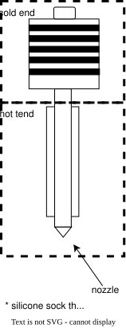
[src]a part cooling fan: Fan located at the base of the toolhead. The part cooling fan directs air to the cooling ducts that sandwich the tip of the hotend's nozzle, rapidly cooling printed filament. [src]
a filament cutter: Upright arm on the toolhead's right face. The filament cutter gets pushed into the filament cutter stopper, which is an arm located on the right inside face near the rear (close to motor A just above the Y-axis linear rod), to push it into the filament thereby cutting it. The filament cutter stopper rotates out in position when cutting and rotates back to be stowed away afterwards. [src] [src]
a camera: Camera attached to the toolhead, used for calibrating motion accuracy and build plate recognition. [src]
Filament enters the nozzle through the PTFE connector located at the top, where the extruder motor grabs it and pushes it into the hotend located at the bottom. The hotend's nozzle poking out of the toolhead enclosure is sandwiched between cooling ducts, where the part cooling fan directs air to rapidly cool filament as it's printed.
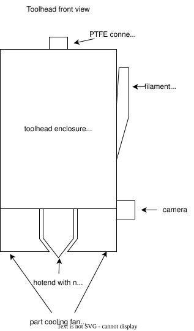
[src]🔍SEE ALSO🔍
↩PREREQUISITES↩
As the name suggests, the heatbed is a heat controlled surface within the H2S. It magnetically secures a build plate, which is a swappable part that serves as the print surface (build plate types have different properties / target different filament materials). Depending on the material being printed, the heatbed's controlled heating may be required or otherwise beneficial for print quality (e.g., adhesion and / or reducing printing artifacts).
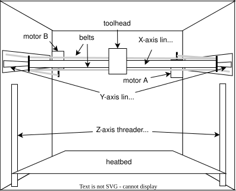
[src]↩PREREQUISITES↩
The toolhead moves on the XY plane using the CoreXY system, H2S's system for moving the toolhead front-back and left-right. The system is comprised of a pair of synchronized motors at the rear face of the chamber responsible for moving the toolhead on the X and Y axes: A motor and B motor. The motors are located at the rear inside face of the H2S, near the top. The B motor is on the left and the A motor is on the right.
The motors connect through the X-axis linear rail and the Y-axis linear rods via a pair of belts. The ...
Both motors work in tandem to coordinate movement in both directions (e.g., one motor isn't solely responsible on an axis).
The toolhead doesn't move on the Z-axis. Instead, depth is controlled by moving the heatbed down as layers are printed out from bottom-to-top. The Z-axis threaded and linear rods are responsible for moving the heatbed.
↩PREREQUISITES↩
The H2S has 2 mechanisms to clean the nozzle. The first mechanism is the purge wiper, a block at the back left of the H2S responsible for cleaning the toolhead between prints / filament changes. The purge wiper consists of ...
The toolhead knocks into the waffle / strips to clean off old stuck filament, sending it down the purge chute.
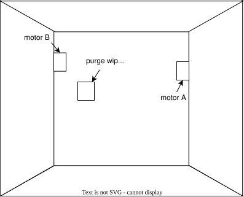
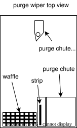
[src] [src]The second mechanism is the nozzle wiper sheet, a sheet on the edge of the heatbed that the nozzle moves across to keep the tip smooth and free of debris. [src]
↩PREREQUISITES↩
In addition to the heatbed and the hotend, there are several additional climate control mechanisms within the H2S. These all work in tandem to appropriately heat and cool filament material:
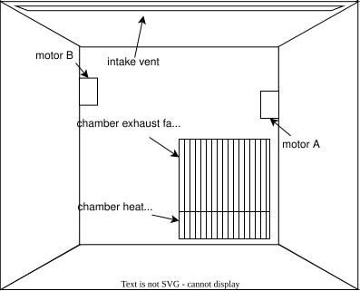

↩PREREQUISITES↩
Just below the heatbed, facing forward and running side-to-side, is a light bar. The light bar, referred to as the status light, changes color to show the operating status of the H2S:
Automatic Material System 2 Pro is an extension to the H2S that manages multiple filaments. The AMS 2 Pro ...
The AMS 2 Pro supports 4 spools per unit, and supports chaining up to 4 AMS 2 Pro units together to support up to 16 spools per print. Additionally, the 4 chained AMS 2 Pro units may be chained up even further by 8 AMS HT units, enabling up to 24 spools per print.
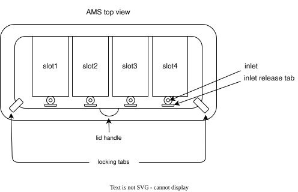
[src] [src]↩PREREQUISITES↩
The H2S's chamber has 2 inlets to feed filament to the toolhead, one specifically for TPU and one specifically for non-TPU. The non-TPU inlet passes filament through a filament buffer, a tension-control / slack-management device at the rear face of the H2S. The filament buffer slides forward and backward, storing a small buffer of filament as it slides forward.
When the non-TPU inlet is hooked up to ...
The TPU inlet bypasses the filament buffer. The inlet in positioned just to the right of the filament buffer, feeding the PTFE directly from the exterior into the chamber. The PTFE tube used for the TPU inlet may either be the same PTFE tube attaching the filament buffer to the toolhead (disconnecting it and reconnecting it to the TPU inlet) or a separate PTFE tube.
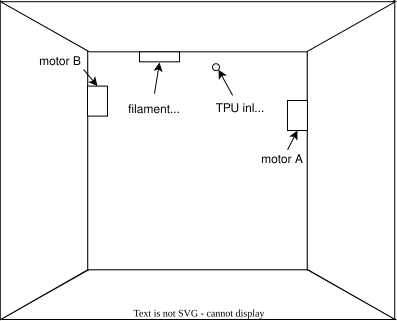
[src]⚠️NOTE️️️⚠️
In some cases, you may be able to use TPU with the non-TPU inlet. If you're using an AMS 2 Pro and your TPU is specifically branded as TPU for AMS, you can use it. [src]
↩PREREQUISITES↩
The subsections below detail high-level operational guidelines of the H2S.
The H2S must be placed on a flat and stable surface. The operating space recommended is 80cm width x 102cm depth x 105cm height, which covers the space required in the back for the exhaust and an AMS 2 Pro to sit on top. [src]
The H2S is recommended to be operated in temperatures between 15-30C (60-85F). If the temperature is ...
The chamber has an assortment of fans and vents to circulate cool air / blow out hot air (e.g., chamber exhaust fan, auxiliary part cooling fan, and chamber intake vent), but in warmer climates that may not be enough. [src]
H2S's auto-calibration attempts to adjust itself to account for the expected variances between manufactured H2S printers and variances caused by wear. Examples of calibrations include bed leveling (working around variances in the heatbed), motor noise cancellation, and vibration compensation.
Trigger auto-calibration manually by navigating to [Wrench Icon] → Settings → Calibration. Perform auto-calibration whenever ...
⚠️NOTE️️️⚠️
There are optional modules to perform even tighter calibration. Specifically, the vision encoder.
Filament can be loaded through either an AMS unit (e.g., AMS 2 Pro or AMS HT) or the external spool holder. The external spool holder is used when ...
⚠️NOTE️️️⚠️
The source doesn't cite this, but I know for a fact that TPU is not supported by the AMS 2 Pro and must be fed via the external spool holder (unless it's specifically branded as TPU for AMS, which Bambu Lab sells).
To load filament using the AMS 2 Pro, ...
To load filament using the external spool holder, ...

Most Bambu Lab filaments come wound up on twist-apart spools. Once the filament on the spool has been all used up, a refill may be purchased (refill means filament without a spool) and reinserted into the empty spool. Refills come pre-wound ready to be inserted directly on to the spool.
To refill a spool ...
Depending on the type of material, some filaments come wound up on cardboard spools. Only plastic Bambu Lab spools are refillable, not cardboard.
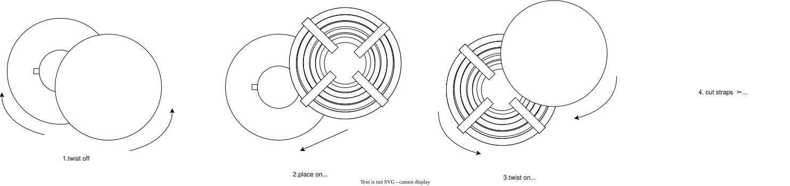
[src]The H2S's UI is exposed via a touch screen on the exterior of the front face, located on the top left.
Along the left side of the UI are 5 options, each represented by an icon:
The subsections below provide instructions on how to navigate to important parts of the UI.
To calibrate the H2S, navigate to [Settings] → Calibration → Print Calibration, select the desired calibrations and hit Start. [src]
To print, navigate to [Home] → Print Files and select the drive and file to load. Two drives should be present:
Once a file is chosen, select the appropriate Plate and Nozzle (H2S comes with "Textured PEI" plate and "0.4mm Standard" nozzle - these should be selected as defaults). Then, hit Next and select the filament to print with. Then, hit Print to begin printing. [src]
To configure the printing speed, navigate to [Controls] → Speed and select either Silent, Standard (default), Sport, or Ludicrous. [src]
⚠️NOTE️️️⚠️
An introductory YouTube video I watched mentioned that the faster the speed is, the lower quality the print will be. Some people are willing to accept lower quality prints in exchange for speed.
To perform movements of the toolhead (XY axis) and heatbed (Z axis), navigate to [Controls] → Motion and tap the adjustment buttons as necessary. [src]
⚠️NOTE️️️⚠️
This seems to only be for testing purposes and moving things to get at parts? I had to use this feature to get at a thin piece of plastic that popped off and fell on the bottom of the H2S. I moved the heatbed up so I could fit my hand in and reach it.
To perform ad hoc extrusion and retraction of filament, navigate to [Controls] → Nozzle & Extruder and use the up/down buttons under Extruder. [src]
⚠️NOTE️️️⚠️
This seems to be for testing purposes. But also, does this have to be done when swapping between AMS 2 Pro and external spool holder?
When the nozzle has been swapped, navigate to [Controls] → Nozzle & Extruder and select the nozzle's type under Nozzle. [src]
To set the nozzle's temperature, navigate to [Controls] → Nozzle & Extruder and select the nozzle's temperature under Nozzle. [src]
⚠️NOTE️️️⚠️
This seems to only be for testing purposes and doesn't apply to any prints? AFAIK initiating a new print should unset this as the print needs specific temperatures based on the print and the filament used.
To set the heatbed's temperature, navigate to [Controls] → Heatbed and select the temperature. [src]
⚠️NOTE️️️⚠️
This seems to only be for testing purposes and doesn't apply to any prints? AFAIK initiating a new print should unset this as the print needs specific temperatures based on the print and the filament used.
To set the chamber's temperature, navigate to [Controls] → Chamber and select the temperature. [src]
⚠️NOTE️️️⚠️
This seems to only be for testing purposes and doesn't apply to any prints? AFAIK initiating a new print should unset this as the print needs specific temperatures based on the print and the filament used.
To turn the chamber's light on/off, navigate to [Controls] and toggle the Light switch. [src]
To configure the H2S's internal climate, navigate to [Controls] → Air Condition and select either Cooling or Heating. Individual parts that control the climate (e.g., fans, heaters, and exhausts) are listed and can be individually controlled. [src]
When the mode is set to ...
To select which filaments are in the AMS 2 Pro and / or external spool holder, navigate to [Filament] and select the desired spool to input the type, color, and manufacturer of filament. Bambu Lab filaments come with RFID that allows the AMS 2 Pro to automatically identify material and color. [src]
When a filament runs out, the H2S and attached AMS 2 Pro unit automatically swap to a second spool to continue printing, provided that second spool has the same brand, color, and material of the original spool being printed with. To enable auto refill, navigate to [Settings] → AMS Options and select AMS Auto-Refill. Then, navigate to [Filament], select the wrench icon, and select Auto Refill to view refill relationships. [src].
⚠️NOTE️️️⚠️
On the H2D, there are 2 extruders (left and right) and apparently each of the H2D's AMS 2 Pro units is assigned to one of these heads (there may be multiple AMS 2 Pros per printer). The second spool must be in an AMS 2 Pro unit assigned to the same extruder for auto refill to use it.
To dry filament, ensure the spool is loaded into the AMS 2 Pro and navigate to [Filament] and find the water droplet icon. Below the icon should be a humidity sensor reading. Select the water droplet icon and either ...
..., then select Start. [src]
⚠️NOTE️️️⚠️
What happens when the filaments within the AMS 2 Pro aren't all the same material? It seems there might be some guard rails preventing you from doing this with certain mixes of materials.
When drying high-temperature filament, you need to take out the low-temperature filament. For example, when drying ABS, PLA filament cannot be placed in the AMS.
The following table summarizes key characteristics of filaments supported by the H2S (as of time of writing). The column(s) ...
⚠️NOTE️️️⚠️
The list below isn't exhaustive, and some filament types of sub-types (e.g., Neon PLA) require specific hardware to print with (e.g., hardened steel nozzle or engineering build plate).
| Name | Stiffness | Impact Strength | Heat Deflection Temperature (ISO 75) |
Saturated Water Absorption Rate | Nozzle temperature | Heatbed temperature | Chamber temperature | Drying | Resistance |
|---|---|---|---|---|---|---|---|---|---|
| PLA [src] | 1.5/5 | 2/5 | 1.8 MPa 54C 0.45 MPa 57C |
25C 55% RH 0.43% | 190-230C | 35-45C | 25-45C | 50C 8h | Acid: no Alkali: no Organic solvent: some no Oil/grease: most yes Flammable: yes |
| PLA-CF [src] | 2/5 | 1.5/5 | 1.8 MPa 54C 0.45 MPa 55C |
25C 55% RH 0.42% | 210-240C | 35-45C | 55C 8h | Acid: no Alkali: no Organic solvent: some no Oil/grease: most yes Flammable: yes |
|
| PETG HF [src] | 1/5 | 2.5/5 | 1.8 MPa 62C 0.45 MPa 69C |
25C 55% RH 0.40% | Acid: no Alkali: no Organic solvent: some no Oil/grease: most yes |
||||
| PETG-CF [src] | 1.5/5 | 3/5 | 1.8 MPa 67C 0.45 MPa 74C |
25C 55% RH 0.30% | |||||
| ABS [src] | 1/5 | 3/5 | 1.8 MPa 84C 0.45 MPa 87C |
25C 55% RH 0.65% | 240-270C | 80-100C | 45-60C | 80C 8h | Acid: yes Alkali: yes Organic solvent: some no Oil/grease: some no Flammable: yes |
| ABS-GF [src] | 1.5/5 | 1/5 | 1.8 MPa 88C 0.45 MPa 99C |
25C 55% RH 0.53% | 260-280C | 90-100C | 60-70C | 80C 8h | Acid: yes Alkali: yes Organic solvent: some no Oil/grease: some no Flammable: yes |
| ASA [src] | 1/5 | 3/5 | 1.8 MPa 92C 0.45 MPa 100C |
25C 55% RH 0.45% | 240-270C | 80-100C | 45-60C | 80C 8h | Acid: yes Alkali: yes Organic solvent: some no Oil/grease: some no Flammable: yes |
| ASA-CF [src] | 2/5 | 0.5/5 | 1.8 MPa 102C 0.45 MPa 110C |
25C 55% RH 0.33% | |||||
| PC [src] | 1.5/5 | 2.5/5 | 1.8 MPa 117C 0.45 MPa 112C |
25C 55% RH 0.25% | 260-280C | 90-100C | 45-60C | 80C 8h | Acid: no Alkali: no Organic solvent: some no Oil/grease Flammable: yes |
| PC FR [src] | 1/5 | 3.5/5 | 1.8 MPa 108C 0.45 MPa 113C |
25C 55% RH 0.12% | 260-280C | 90-100C | 80C 8h | Flammable: retardant | |
| TPU 95A HF [src] | 0.5/5 | 5/5 | N/A | 25C 55% RH 1.08% | |||||
| TPU 90A [src] | 0.5/5 | 5/5 | N/A | 25C 55% RH 0.61% | |||||
| TPU 85A [src] | 0.5/5 | 5/5 | N/A | 25C 55% RH 0.67% | |||||
| TPU for AMS [src] | 0.5/5 | 5/5 | N/A | 25C 55% RH 1.20% | 220-240C | 30-35C | 70C 8h | Acid: no Alkali: no Organic solvent: some no Oil/grease: most yes Flammable: yes |
|
| PA6-CF [src] | 3/5 | 3/5 | 1.8 MPa 164C 0.45 MPa 186C |
25C 55% RH 2.35% | |||||
| PA6-GF [src] | 2/5 | 2/5 | 1.8 MPa 158C 0.45 MPa 182C |
25C 55% RH 2.56% | |||||
| PAHT-CF [src] | 2.5/5 | 3.5/5 | 1.8 MPa 170C 0.45 MPa 194C |
25C 55% RH 0.88% | |||||
| PET-CF [src] | 3/5 | 2.5/5 | 1.8 MPa 182C 0.45 MPa 205C |
25C 55% RH 0.37% | 260-290C | 80-100C | 45-60C | 80C 8-12h | Acid: no Alkali: no Organic solvent: some no Oil/grease: most yes Flammable: yes |
| PPA-CF [src] | 5/5 | 3/5 | 1.8 MPa 196C 0.45 MPa 227C |
25C 55% RH 1.30% | |||||
| PPS-CF [src] | 4/5 | 1.5/5 | 1.8 MPa 235C 0.45 MPa 264C |
25C 55% RH 0.05% | 310-340C | 100-120C | 60-90C | 100-140C 8-12h | Acid: yes Alkali: yes Organic solvent: yes Oil/grease: yes Flammable: retardant (self-extinguishing when away from fire) |
⚠️NOTE️️️⚠️
Stiffness and impact strength columns come from the Bambu Lab product page for the specified filament. Remaining columns come from the Bambu Lab technical document sheet (TDS) for that product.
A plate that sits on the heatbed and serves as the print surface. There are different types of build plates, each with different properties targeting different filament materials (4 as of time of writing):
The following table summarizes filament materials supported and material requirements for each build plate.
Of the build plates listed, the ...
⚠️NOTE️️️⚠️
Textured PEI Plate only supports glue sticks, not liquid glue? The table just says "Yes" or "No" but doesn't explicitly mention either, but the header of that column says "Requires Glue Stick?" so I specifically put down stick.
Textured PEI Plate's buy page (where the Textured PEI portion of the table above comes from) also had an extra column about whether the cover should be removed, but that has nothing to do with the build plate? It's to prevent heat creep?
Bambu Studio is H2S's desktop software. It provides access to MakerWorld (a repository of printable objects), processes 3D models for printing by slicing them, and controls and gets feedback from the H2S. [src] Bambu Studio works with many brands of 3D printers, not just Bambu Lab printers. [src].
⚠️NOTE️️️⚠️
There's also a software product called Bambu Suite, but that's for cutting and engraving while Bambu Studio is for printing.
Bambu Studio has 6 main screens (referred to as tabs), which can be navigated between using the top toolbar:
Above the top toolbar is the main menu, packed to condensed space. Next to the packed main menu are a few quick access buttons: Save, undo, and redo. Regardless of which screen you're on, the top toolbar (and main menu and quick access buttons) should always be present.
The standard workflow is to plan out what and where things get printed on the Prepare screen, then review how the print will get sliced along with diagnostics on the Preview screen, then initiate the print.
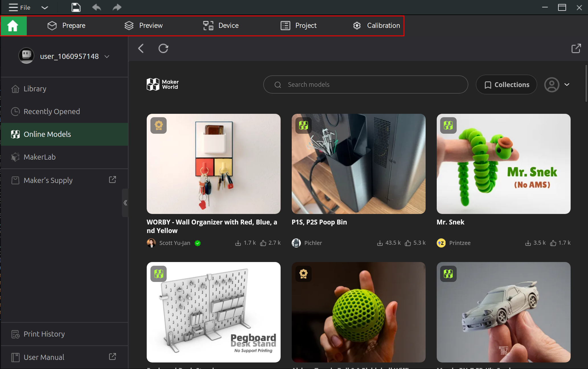
[src]Bambu Studio has a 3D viewport on both the Prepare screen and the Preview screen.
Bambu Studio's Prepare screen is for transforming models for print (e.g., orientation, scale, position, and color) as well as configuring print settings (e.g., layer height and infill density).
Prepare viewport controls:
| Action | Shortcut |
|---|---|
| Rotate camera | 🖰 Left-drag (ensure no object is selected) |
| Pan camera | 🖰 Right-drag |
| Zoom camera | 🖰 Scroll wheel |
| Select object | 🖰 Left-click object |
| Select additional object | Ctrl + 🖰 Left-click object |
| Select multiple objects | Shift + 🖰 Right-drag green selection rectangle over objects |
| Deselect objects | 🖰 Left-click area without object |
| Select all objects | Ctrl + A |
| Move selected objects 10mm | Arrow key (←, ↑, →, or ↓) (ensure object is selected) (movement occurs relative to camera's view) |
| Move selected objects 1mm | Shift + Arrow key (←, ↑, →, or ↓) (ensure object is selected) (movement occurs relative to camera's view) |
| Undo | Ctrl + Z |
| Redo | Ctrl + Y |
Bambu Studio's Preview screen is for exploring slices. Each screen is partitioned into a 3D viewport and a left sidebar.
Preview viewport controls:
| Action | Shortcut |
|---|---|
| Move vertical slider | ↑ or ↓ |
| Move horizontal slider | ← or → |
| Toggle single layer view | L |
| Pan camera | 🖰 Right-drag |
| Zoom camera | 🖰 Scroll wheel |
| Select multiple objects | Shift + 🖰 Right-drag green selection rectangle over objects |
| Select additional object | Ctrl + 🖰 Left-click object |
| Select all objects | Ctrl + A |
| Move selected objects 10mm | Arrow key (←, ↑, →, or ↓) (ensure object is selected) (movement occurs relative to camera's view) |
| Move selected objects 1mm | Shift + Arrow key (←, ↑, →, or ↓) (ensure object is selected) (movement occurs relative to camera's view) |
| Undo | Ctrl + Z |
| Redo | Ctrl + Y |
To the left of the 3D viewport is a sidebar.
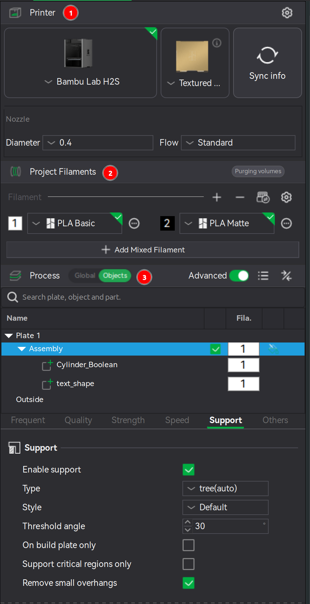
The sidebar contains a ...
↩PREREQUISITES↩
Bambu Studio has a section for defining which filaments are available to a project. The Project Filaments section is in the sidebar of the Prepare screen and the Preview screen.
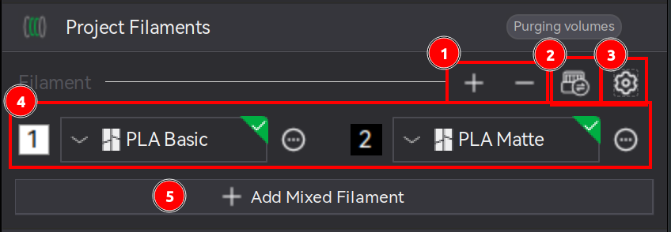
Each filament is assigned an ID (e.g., 1, 2, ...). Objects and layers within the 3D viewport, rather than being assigned an exact filament, are instead assigned one of these IDs. The filament assigned to the ID number can be swapped to a different filament via the dropdown next to the ID, thereby automatically updating any areas of an object layer making use of that ID.
At the bottom is an Add Mixed Filament button. Mixed filaments is a mix of existing filaments printed in interleaved layers to achieve a new color via half-toning (e.g., alternating between 1 layer black and 1 layer white gives the impression that the printed object is gray). Mixed filaments are not recommended on the H2S because it's a single nozzle printer - excessive swapping between filaments causes a lot of waste. [src] [src]
⚠️NOTE️️️⚠️
Mixed filaments don't have the desired effect on top/bottom surfaces because those are single layers and only one color is printed per layer? They work best on near vertical walls. It may be possible to rotate the object such that top/bottom surfaces are reduced, but it'll likely require introducing supports.
⚠️NOTE️️️⚠️
There's a whole section on filament settings: https://bambulab.com/en/support/academy/3/course/982590125637046272/chapter/43. I don't think I ever need to mess with it if I'm using Bambu Lab filaments? The defaults should all work just fine?
↩PREREQUISITES↩
Bambu Studio has a section for defining how models and model groupings (assemblies) are printed. The Process section is in the sidebar of the Prepare screen and the Preview screen.
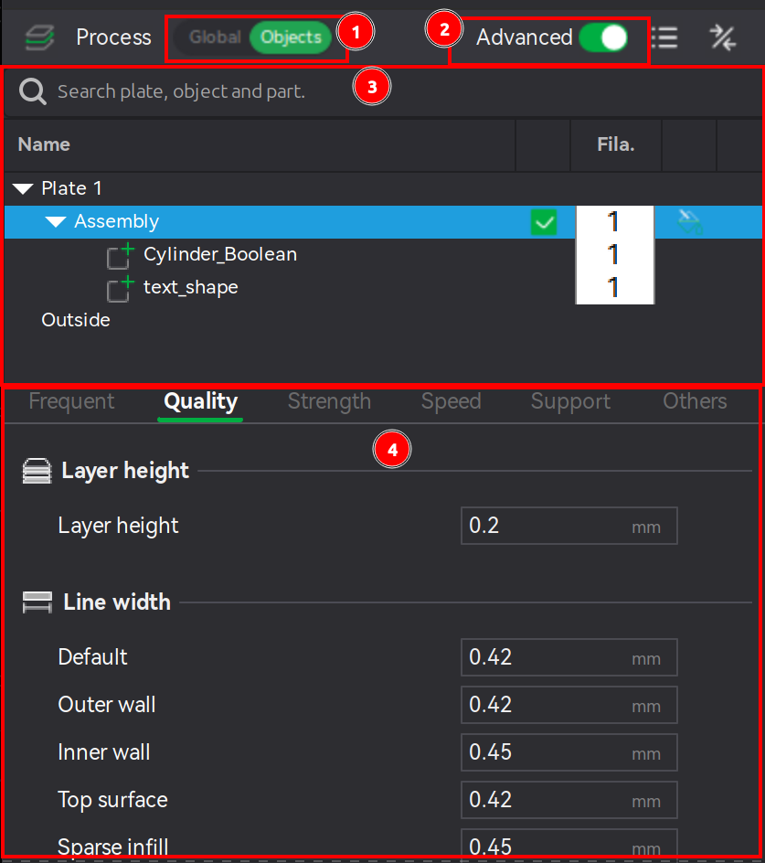
The Process section can change scope using a toggle (section 1). The scope can either be global, or it can target a specific set of objects (e.g., a model, an assembly, or some combination of models/assemblies). If not scoped globally, an object hierarchy will be displayed directly below the toggle (section 3). The selections in the object hierarchy will reflect those in the 3D viewport and vice versa.
Below the object hierarchy is a hierarchy of parameters that control printing:
A full accounting of parameters is beyond the scope of this section. Individual parameters will be referenced / explained in subsequent sections as needed.
↩PREREQUISITES↩
Bambu Studio will slice the objects on the build plate whenever ...
The Preview screen is where the layers, nozzle paths (G-code printing instructions), and printing diagnostics are color-coded and displayed to the user. The screen is broken up into the following controls / panels:
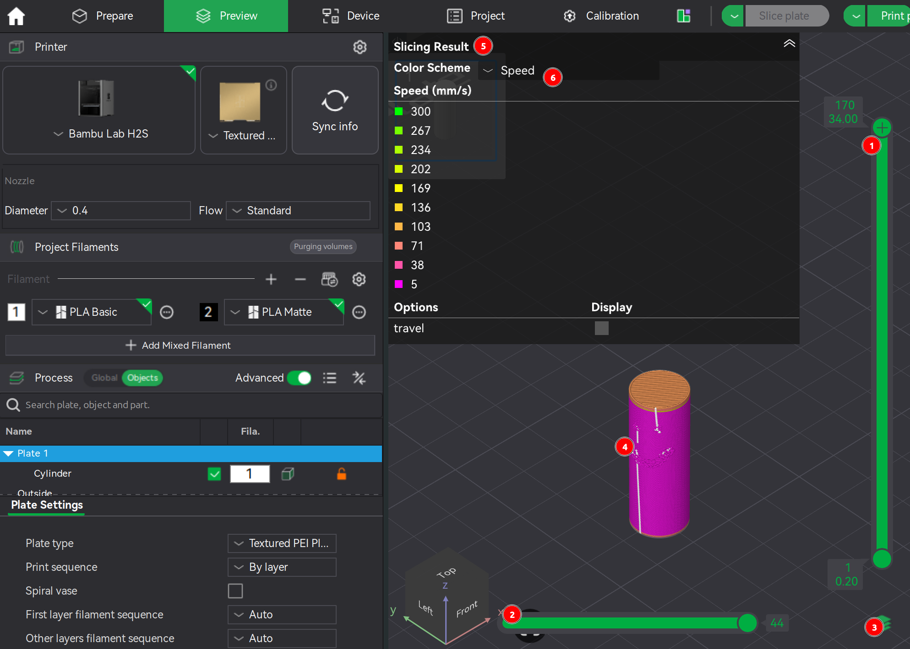
There are several color schemes available. A full accounting is outside the scope of this section.
Bambu Studio saves and loads project state as a 3MF file.
Alternatively, Bambu Studio's Home screen integrates MakerWorld. MakerWorld is an online repository of printable projects, openable as if opening a local project. [src]
↩PREREQUISITES↩
Import 3D objects into the project either via ...

The file formats supported by the import function span both graphics formats (e.g., OBJ) and manufacturing formats (e.g., STL).
⚠️NOTE️️️⚠️
Bambu Studio can export the project's 3D objects under File → Export.
⚠️NOTE️️️⚠️
A complete accounting of file formats isn't appropriate here. Just note that, if you're importing SVGs, SVGs have no height. Once an SVG is imported, Bambu Studio gives it a tiny height and then you can scale it to make it taller.
Alternatively, Bambu Studio's Home screen integrates MakerWorld. MakerWorld is an online repository of printable projects. MakerWorld projects can't be imported directly into the current Bambu Studio project. However, it is possible to open a MakerWorld project, save it as a 3MF file (or export as some other file format), and import that file into an existing project. [src]
↩PREREQUISITES↩
In the Prepare screen's 3D viewport, objects can be moved by either ...
selecting objects, then left-clicking them and dragging.
using the auto-arrange tool in Prepare screen's toolbar (button 4, keyboard shortcut A), which will arrange all objects regardless of which are selected.
selecting objects, then hitting arrow keys for 10mm movement. [src]
selecting objects, then hitting Shift + arrow keys for 1mm movement. [src]
selecting objects, then using the move tool in the Prepare screen's toolbar (button 6, keyboard shortcut M), which will present both movement axis arms that can be left-click dragged and a pop-up with coordinates and common alignment and distribution options.
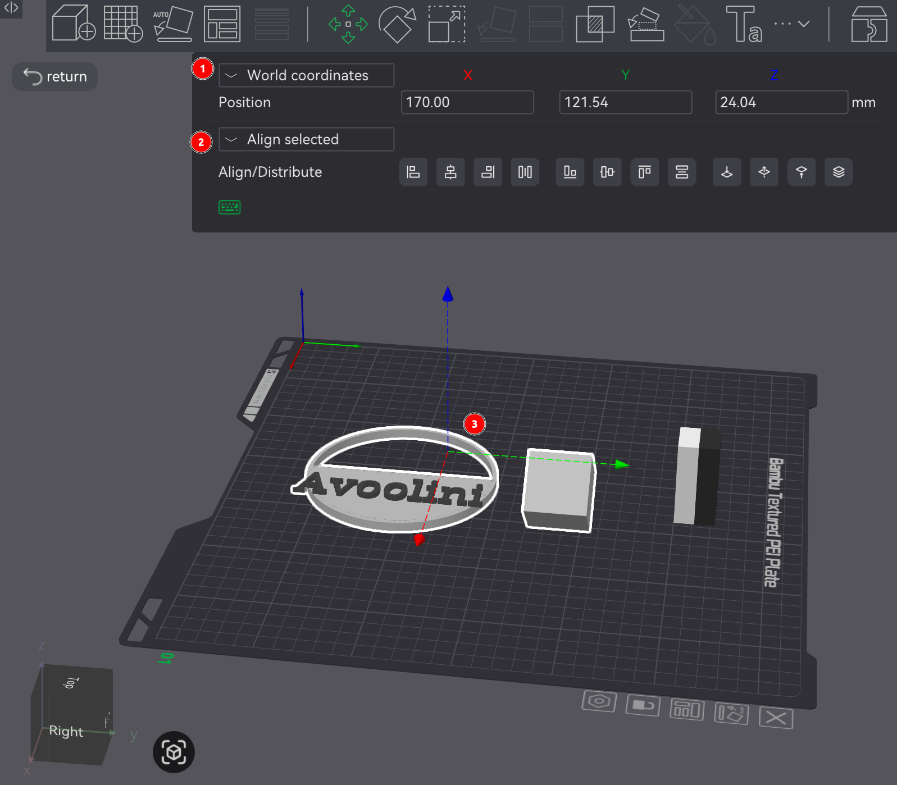
The screenshot above has the following sections:
Object coordinates: Controls and reflects the object's position. As the position fields are updated, the drop-down defines the anchor point from which the movement occurs:
Distribution and alignment: Organizes the positions of a set of objects relative to each other and the build plate. The drop-down defines whether the distribution/alignment happens against ...
Movement axis arms: Sets object's position via dragging arms. [src]
⚠️NOTE️️️⚠️
Objects typically can't be lifted off the build plate without first merging. See Bambu Studio/Object Combining.
↩PREREQUISITES↩
In the Prepare screen's 3D viewport, selected objects can be manually rotated by using the rotation tool in Prepare screen's toolbar (button 7, keyboard shortcut R), which will present rotational axis circles that can be left-click dragged and a pop-up with angles.

Alternatively, an object may be rotated via ...
↩PREREQUISITES↩
In the Prepare screen's 3D viewport, selected objects can be manually scaled by using the scale tool in Prepare screen's toolbar (button 8, keyboard shortcut S), which will present scale axis points that can be left-click dragged and a pop-up with scaling parameters.
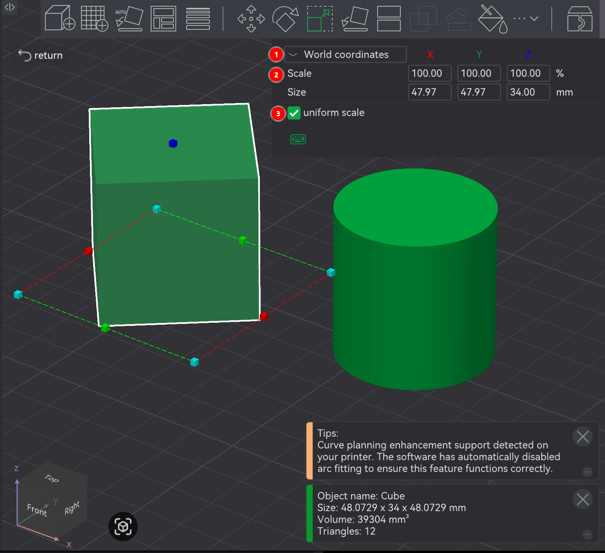
The screenshot above has the following sections:
Coordinates - ?
Scale - Percentage scaled vs original size (X, Y, and Z).
Size - Absolute size on an axis (X, Y, and Z).
uniform scale: If clicked, the other axes will maintain proportions by automatically scaling to be based on a single axis that was scaled. [src]
⚠️NOTE️️️⚠️
I couldn't figure out what the Coordinates dropdown actually does?
↩PREREQUISITES↩
In certain cases, two objects may need to combine into one for printing, such that they print as a single object vs two separate objects.
In the Prepare screen's 3D viewport, select two or more objects, then right-click to open the context menu and select Merge. Merged objects are placed under a single assembly.
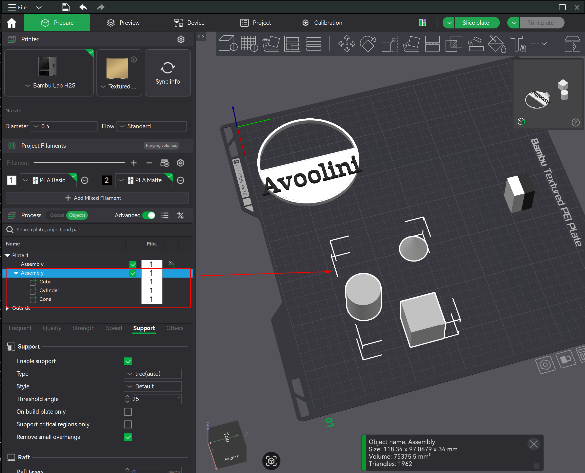
Once objects are within a single assembly, they can be manually moved into each other and / or levitated off the build plate using the move tool (Prepare screen's toolbar button 6, keyboard shortcut M). If objects aren't merged but occupy the same space, slicing will print them as if they're distinct. That is, if two objects occupy the same space, the outer shell / wall of both objects will be drawn inside each other.
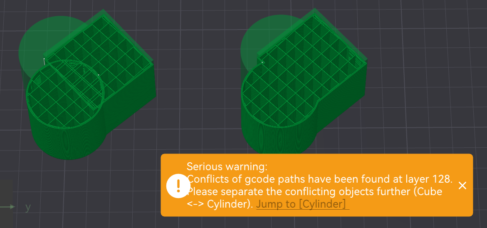
⚠️NOTE️️️⚠️
Doing a mesh boolean union also fixed this outer wall drawing problem.
Alternatively, an object can be loaded and combined with an existing object at the same time. In the 3D viewport, right-click the existing object to open the context menu and navigate to Add Part → Load and select the new object to combine with in the file selection dialog. The objects will be combined in the same way (as an assembly).
🔍SEE ALSO🔍
⚠️NOTE️️️⚠️
You can push objects into each other without putting them under the same assembly, but it'll complain during slicing.
Alternatively, two objects can be repositioned and reoriented such that they touch each other using the assembly tool (Prepare screen's toolbar button 12, keyboard shortcut Y). The assembly tool opens a pop-up used to target how and where the objects touch.
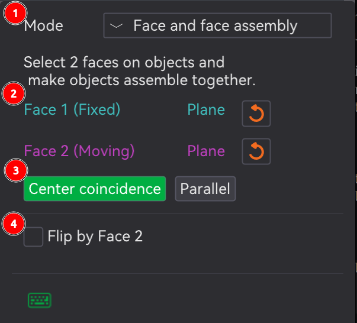
The assembly tool has two Mode options:
Point and Point Assembly: Touches objects on specific points (e.g., vertex).
Click on a point on the first object and click on point on the second object. The first point should highlight as cyan while the second face should highlight as purple, and sections 2 and 3 of the screenshot should update to indicate that a selection's been made. From there, XYZ coordinate fields should show up in the dialog. Set those fields to 0 to bring the points together.
Face and Face Assembly: Touches objects on specific faces.
Click on a face of the first object and click on a face of the second object. The first face should highlight as cyan while the second face should highlight as purple, and sections 2 and 3 of the screenshot should update to indicate that a selection's been made. From there, the ...
⚠️NOTE️️️⚠️
Technically, merging into an assembly isn't required to use the assembly tool in the toolbar. But, if the intent is to stack the objects on top of each other such that one of them has a face off the build plate, it won't work (both objects will be forced back down to touch the build plate).
⚠️NOTE️️️⚠️
The mesh boolean tool (button 11, keyboard shortcut B) can be used to merge the parts of an assembly back into a single model. The mesh boolean tool takes multiple objects (e.g., parts of an assembly or multiple high-level models) and performs a boolean operation on them (e.g., union, intersect, subtraction). So, to combine an assembly to a single object, use the union option.
🔍SEE ALSO🔍
↩PREREQUISITES↩
In the Prepare screen's 3D viewport, selected objects can be painted by using the paint tool in Prepare screen's toolbar (button 13, keyboard shortcut N), which will present a pop-up with painting parameters / controls.
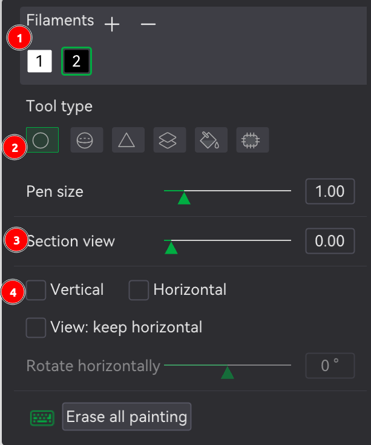
⚠️NOTE️️️⚠️
Ensure more than 1 filament is included in the project via the Project Filaments section in the Prepare screen's left sidebar. Otherwise it'll be impossible to paint anything as there'll just be 1 color.
The remaining fields change based on which painting tool is used. When the paint tool is ...
circle and sphere use a circle and sphere respectively to paint on faces. Circle applies paint to intersecting areas of faces inside the circle, while sphere applies paint to the intersecting areas of faces inside the sphere (flat vs volume). Other than that, the two painting tools are essentially the same.
The option ...
triangle, paints the entirety of triangles that make up faces.
The option ...
height range, paints the entirety of a layer range.
The option ...
fill, paints everything connected based on a connection criteria.
The option ...
gap fill, fills in small gaps based on the color of neighboring faces. This is used to clean up edges that the fill tool couldn't reach into. Unlike the other tools above, this tool doesn't use the mouse. Instead, the Apply button is used to apply gap filling to the entire object.
⚠️NOTE️️️⚠️
There's a Gap area slider here but I don't know definitively what it does and the documentation doesn't state it either.

↩PREREQUISITES↩
Areas of an object that are overhangs may require supports. Supports are temporary additions added under these parts to help keep them stable during printing (e.g., prevent sagging). Supports easily snap off once the print completes.
To have Bambu Studio automatically generate supports, enable the property Support → Enable support. Supports will only be visible in the Preview screen (the screen responsible for showing slices), not this screen (Prepare screen).

The anatomy of a support includes ...
The subsections below discuss each of the above items in more detail.
⚠️NOTE️️️⚠️
What features qualify as a "critical region"? The documentation goes into further details: Cantilevers and sharp tails.
No sense going over that information here.
⚠️NOTE️️️⚠️
The documentation goes over advanced controls near the second half of the page. It might be too much detail to cover here.
↩PREREQUISITES↩
Supports come in two types: Normal and Tree.
Each type comes in either auto mode or manual mode. When the mode is ...
auto, supports are automatically generated based on the support parameters (e.g., threshold angle) and the user can choose to include / exclude areas (e.g., via support painting).
The areas targeted for supports are defined by ...
manual, the user is expected to specify areas of the object that need supports (e.g., via support painting).
The support's type defines the geometry generated:
Normal support: Overhangs are projected directly down to the heatbed.
Normal supports come in two styles:
Tree support: Overhangs are sampled to a set of circles propagating down to the heatbed, weaving around obstacles and possibly enlarging to provide better strength.
Tree supports come in many styles:
⚠️NOTE️️️⚠️
See source to figure out how default switches between and organic. Out of scope for this document.
Normal supports work best with large planar overhangs, giving better surface quality vs tree supports. Tree supports often give better results with complex objects where overhang are small and / ot not planar. When in doubt, use tree supports in hybrid style, because it will explicitly check for planar overhangs and those areas to generate normal supports while the remaining areas get tree supports. [src]
↩PREREQUISITES↩
The gap between supports and the printed object defines how tightly the support adheres to the object vs how easily it can be ripped off the object. Gaps are controlled through properties under Support → Advanced:
⚠️NOTE️️️⚠️
Bottom Z distance is exclusively for supports spanning between areas of the printed object vs between build plate and object? There is no documentation for this parameter.
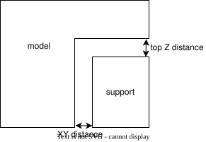
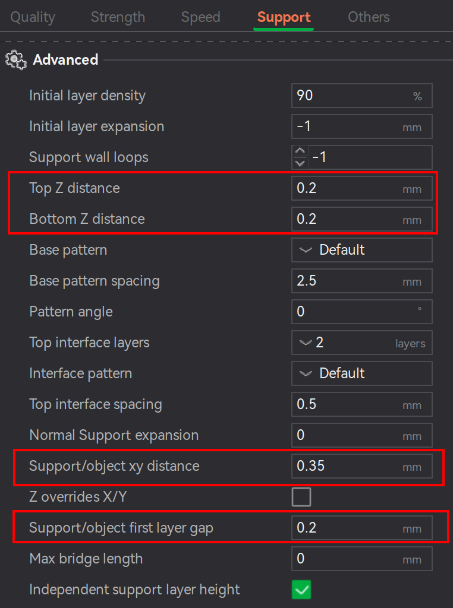
If these gaps are set too small, the support may be difficult to remove or even fuse to the object (unless using dedicated support material such as Support for PLA). If set too large, the overhanging surface may appear rough or sagging due to insufficient supports. For example, ...
⚠️NOTE️️️⚠️
The documentation says to treat these gap parameters not as independent parameters but as related parameters. To achieve desired results, make sure to tune them together.
↩PREREQUISITES↩
Interface layers are support layers that touch the object, while the rest of the support body is referred to as the base. Bambu studio allows targeting specific materials for a support's base and interface. Navigate to the properties under Support → Filament for Supports. The property ...

Additionally, properties under Support → Advanced:
Top interface layers controls the number of layers between the top of the support and the overhanging area of the object being supported.
Too few layers (< 2) and the interface will be weak, making rougher overhangs but easier to remove supports. Too many layers (> 2) and the interface will be stronger and provide a cleaner surface on the overhang, but risks tightly bonding to the object being supported making it harder to remove.
Top interface spacing controls the distance between printed lines within the top interface layers (lower spacing means higher density).
The less spaced out the lines are, the more contact points there are with the interface and the overhang it's supporting. Less contact points means the support should be easier to remove, but it may reduce the hold on / quality of the overhang.
Independent support layer height controls whether the layer height of supports are independent from the layer height of the printed object they're supporting.
⚠️NOTE️️️⚠️
No idea how "Independent support layer height" would work given that there's asymmetry in the layer heights? Would it support layers first and then the object layers? What happens if there's a chance for collision?
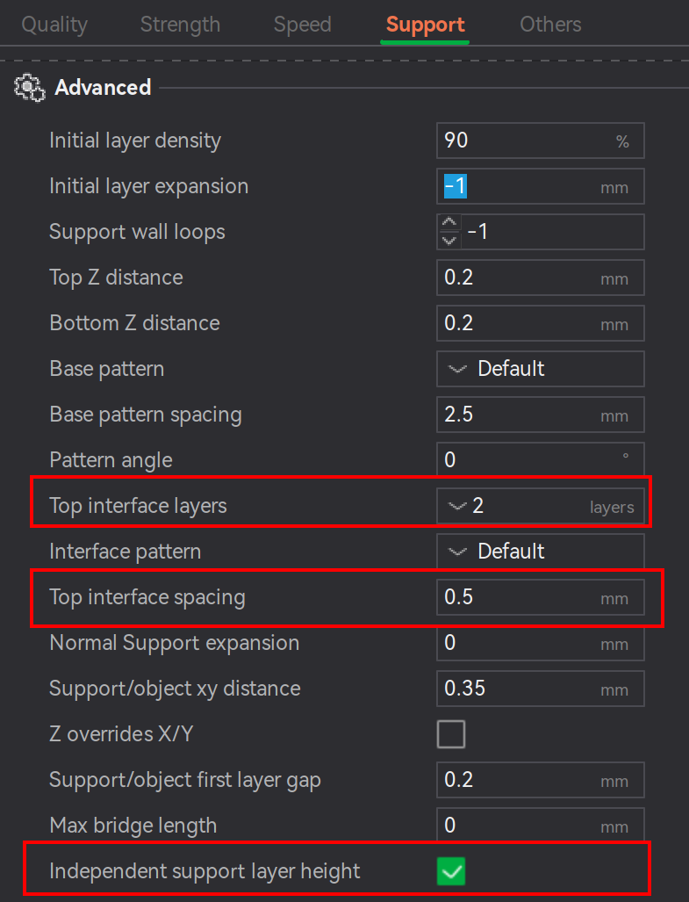
In certain cases, it's beneficial to manually specify which areas of the object to explicitly support and unsupport. Two mechanisms exist for this: painting and blockers/enforcers.
Painting: In the Prepare screen's 3D viewport, select an object and click support painting in the Prepare screen's toolbar (button 16, keyboard shortcut L). Bambu Studio will open a pop-up and present an isolated view of the object where areas can be painted as include vs exclude.

To paint, select a Tool type. The tools configuration options will show up directly underneath. Regardless of the tool type, ...
Chances are the viewport will need to move around during the painting process. To move the viewport rather than paint (e.g., move camera, rotate camera, and zoom camera), use the same viewport controls as normal with the exception that any mouse button presses required are not on the object to be painted.
On overhangs only defines whether surfaces available for painting are limited to only those deemed as needing supports (e.g., as defined by Threshold angle).
Blockers/Enforcers: By adding a secondary object and intersecting with the supported object, supports are explicitly added / removed from the intersecting portion. Right-click an object to get its context menu, and either navigate to Support blocker or Support enforcer. Regardless of which you choose, the same object options will display for both (e.g., load a custom model, preloaded cube, or preloaded cylinder,). If ...
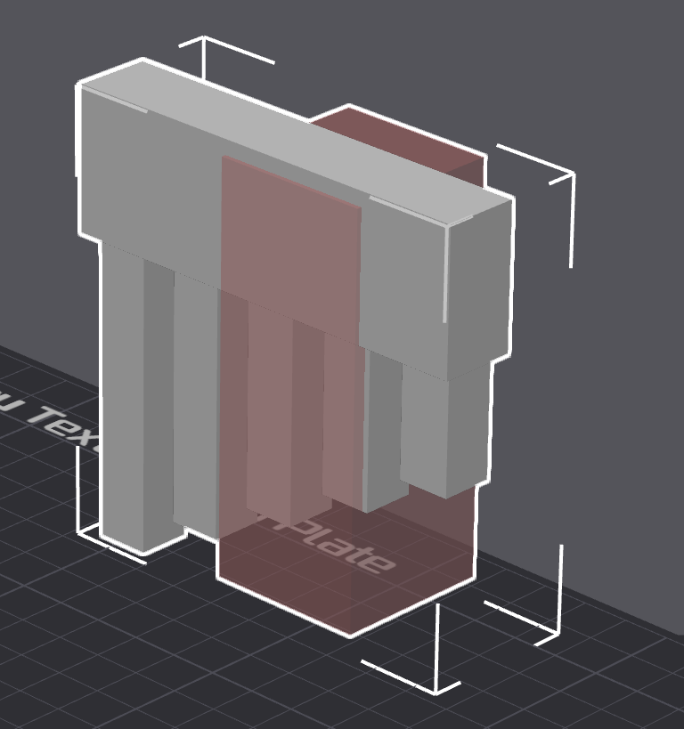
Where supports generate depends on type of supports being added (e.g. tree supports). If the type is set to ...
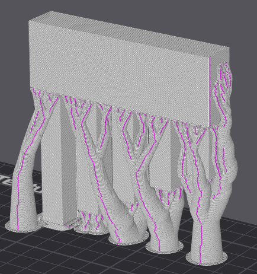
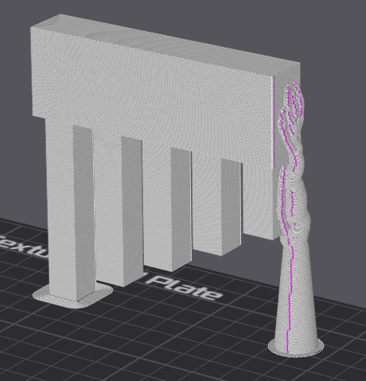
⚠️NOTE️️️⚠️
The example above isn't a valid print, but for some reason Bambu Studio isn't showing a warning / error popup slicing.
↩PREREQUISITES↩
A raft is a type of support that elevates an object off the build plate. Rafts are commonly used ...
🔍SEE ALSO🔍
Navigate to the properties under Support → Raft. The property ...

⚠️NOTE️️️⚠️
The source mentions a couple of other parameters that are not present: First layer density and first layer expansion. I'm not sure if these have been removed, but I don't see them in my version of Bambu Studio.
Raft contact Z distance description inside Bambu Studio mentions that the parameter is ignored for "soluble interfaces". I'm not sure what that term means. Also, I don't know why there'd need to be a gap between the raft and the object? How would it stop the object from sagging if there's a gap?
↩PREREQUISITES↩
In certain cases, an object may either need to be cut (e.g., oversized for printer) or may benefit from being cut (e.g., minimize need for supports or make it easier to sand/paint/finish). Cut pieces are typically assembled and fused back together after printing (e.g., glue, pen welding, joinery).
In the Prepare screen's 3D viewport, an object can be cut by selecting it and clicking cut tool in the Prepare screen's toolbar (button 10, keyboard shortcut C), which will open a pop-up, present a cutting plane in the 3D viewport, and present cutting plane rotational axis and offset height controls in the 3D viewport.
The cutting tool has two modes, chosen using the Mode dropdown at the top of the pop-up:
Planar cuts the object using a flat plane.
Rotation reflects the 3D viewport's cutting plane rotational control.
Movement / Height reflects the 3D viewport's cutting plane height control.
Add connectors manipulates the cut final pieces to add joinery mechanisms, making them easier to reassemble.
If clicked, the cut plane is highlighted in the viewport and a pop-up of joinery options is presented (e.g., plug, snap, and thread) along with parameters for each option (e.g., depth and size). Set the joinery options as desired and click on the cut plane to place the joinery. Most joinery options are self-explanatory.
⚠️NOTE️️️⚠️
For the Plug type, if you're confused about frustum vs prizm: Frustum tapers the sides as it goes up (similar to a pyramid) while the prizm option keeps the sides straight.
To flip between the two sides of the cut plane, click the Flip cut plane button.
To force the joinery in the middle of the cut plane, sleect Middle of geometry before clicking.
After cut defines how the cut pieces are treated:

Dovetail cuts the object using a a flat plane with a flared-out trapezoid indent, referred to as a dovetail. The two pieces are intended to slide into each other where the indent cutout is.
Rotation reflects the 3D viewport's cutting plane rotational control.
Movement / Height reflects the 3D viewport's cutting plane height control.
Groove manipulates the indent in the cut plane.
Most of the options are self-explanatory. Groove Angle controls size asymmetry between the two sides of the indent. Flap Angle controls the angle at which the indent's flaps fan out.
After cut defines how the cut pieces are treated:
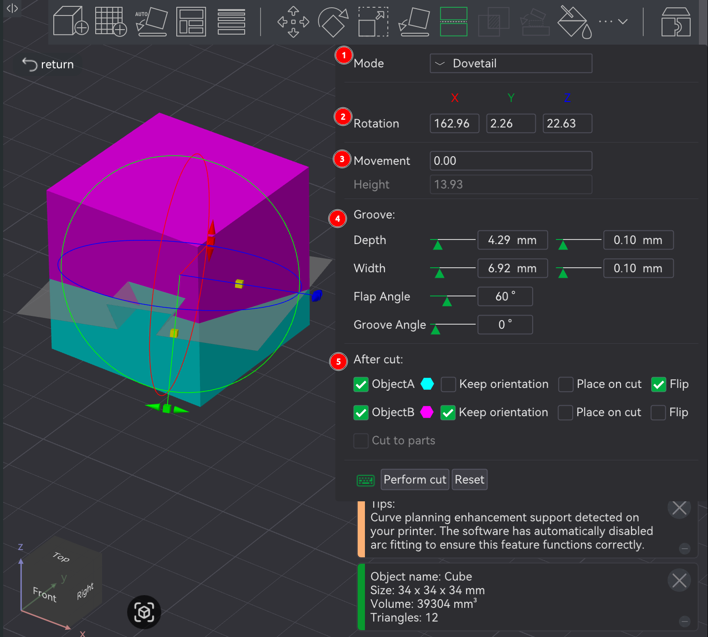
⚠️NOTE️️️⚠️
The mesh boolean tool (button 11, keyboard shortcut B) can be used to merge the parts of an assembly back into a single model. The mesh boolean tool takes multiple objects (e.g., parts of an assembly or multiple high-level models) and performs a boolean operation on them (e.g., union, intersect, subtraction). So, to combine an assembly to a single object, use the union option.
↩PREREQUISITES↩
In the Prepare screen's 3D viewport, selected objects can have set operations applied (e.g., union, intersection, and subtraction) by using the mesh boolean tool in Prepare screen's toolbar (button 11, keyboard shortcut B), which present a pop-up with which which operations to apply.
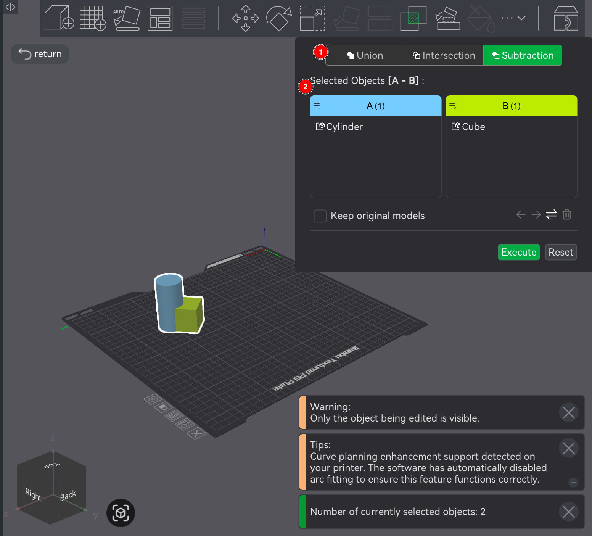
The mesh boolean tool has 3 possible operations:
Regardless of which you pick, you can specify which of the selected models to apply the operation to. The resulting operation creates a single model with the chosen set operation applied (not an assembly of models, but a single model).
Given that the mesh boolean tool creates a single new model, the resulting single model typically doesn't encounter overlap issues during slicing. For example, if models aren't union'd but occupy the same space, slicing will print them as if they're distinct. That is, if two models occupy the same space, the outer shell / wall of both models will be drawn inside each other.
⚠️NOTE️️️⚠️
Merging two objects under the same assembly also fixed this outer wall drawing problem.
🔍SEE ALSO🔍
↩PREREQUISITES↩
A negative part is an object that gets combined with an existing set of objects (same assembly), but it's purpose is to subtract areas of the existing objects. Any region of the existing objects that intersect with the negative part are cut out during slicing.
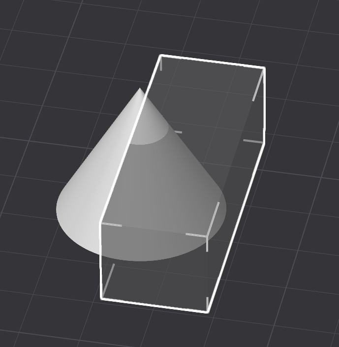
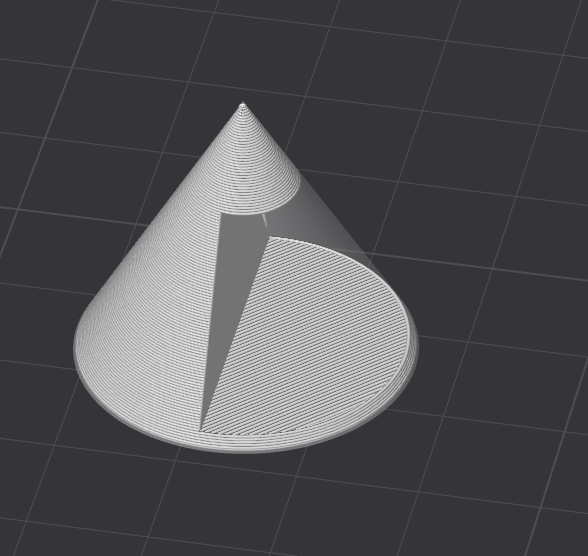
To add a negative part, right-click on an object to open the context-menu and navigate to Add negative part and select either a primitive or Load... to import a model. The negative part will be placed under an assembly along with the parts of the original object.
As shown in the screenshots above, negative parts appear slightly transparent when viewed in the Prepare screen and can be manipulated just like any other object. However, in the Preview screen, any region of the existing objects that intersect with the negative part are cut out during slicing.
⚠️NOTE️️️⚠️
This is similar to subtraction using the mesh boolean tool in the Prepare screen's toolbar. However, unlike the mesh boolean tool's subtraction, the original model being subtracted stays around and can be moved and scaled and rotated, which is useful if you want to quickly make changes after the fact.
↩PREREQUISITES↩
A modifier part is an object that gets combined with an existing set of models (same assembly), but it's purpose is to modify properties of specific areas of existing models. Any region of the existing models that intersect with the modifier part have the modifier part's properties applied.
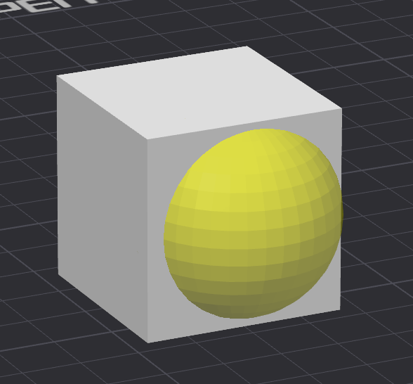
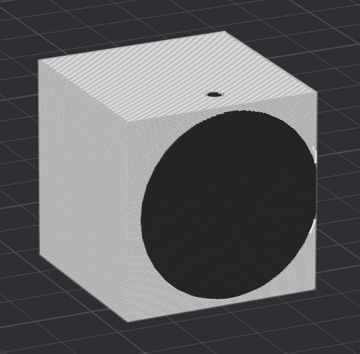
To add a modifier part, right-click on an object to open the context-menu and navigate to Add modifier and select either a primitive or Load... to import a model. The modifier part will be placed under an assembly along with the parts of the original object.
As shown in the screenshots above, modifier parts appear gold when viewed in the Prepare screen and can be manipulated just like any other model. However, in the Preview screen, any region of the existing models that intersect with the modifier part have their properties changed to that of the modifier part (e.g., change filament color or apply fuzzy skin).
Common use cases for modifier parts include ...
⚠️NOTE️️️⚠️
There's also a related feature called a height range modifier. It adjusts based on height. For example, top of very tall models can printer slower at higher layers for stability or top heavy models can have infill density increased at lower layers to stabilize.
↩PREREQUISITES↩
Text can be placed on an object, extruded from an object, indented on to an object, or placed as a standalone extruded object on its own.
To generate text as a standalone object, in the Prepare screen's 3D viewport, click the text shape tool in the Prepare screen's toolbar (button 14, keyboard shortcut T). Text will show up in the middle of the build plate on the 3D viewport along with a pop-up where the text and its settings (e.g., font parameters) can be changed.
All parameters in the pop-up should be self explanatory, with the exception of Angle. Angle is the rotation of the text, which reflects the rotation circle in the 3D viewport.
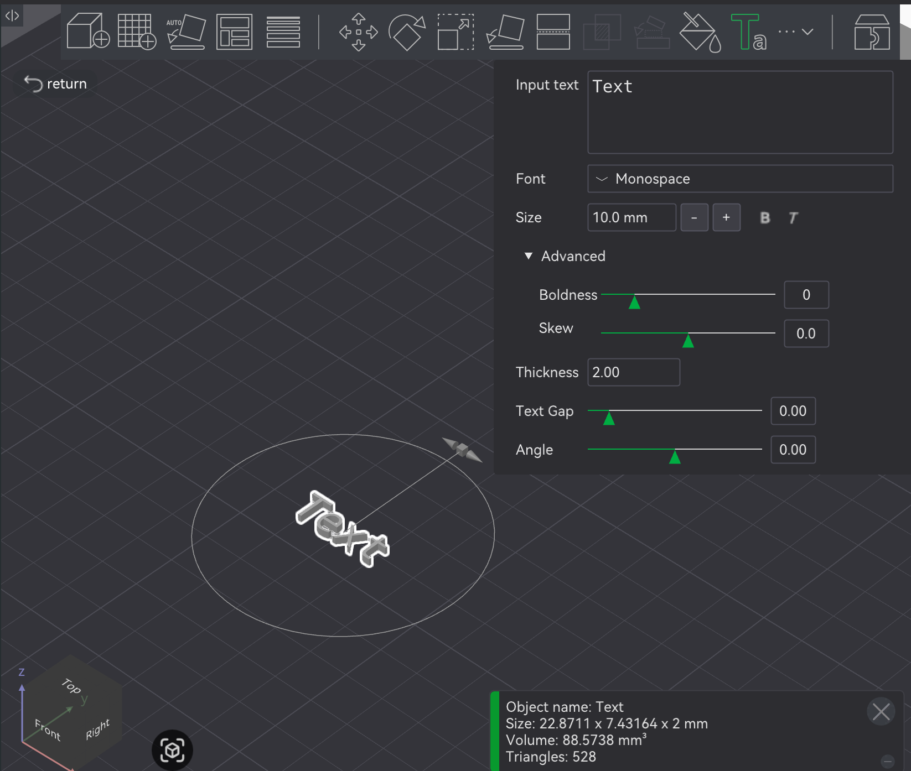
To place text on an object, in the Prepare screen's 3D viewport, select the object and then click the text shape tool in the Prepare screen's toolbar (button 14, keyboard shortcut T). Text will show up on the object along with a pop-up where the text, its settings (e.g., font parameters), and how its placed on the object can be changed.
The parameters are the same as the parameter before, except for Mode and Operation.

Mode defines how the text interacts with the object:
⚠️NOTE️️️⚠️
At the very top of the example object below is the projection option. Note that the top of the text is cut off.
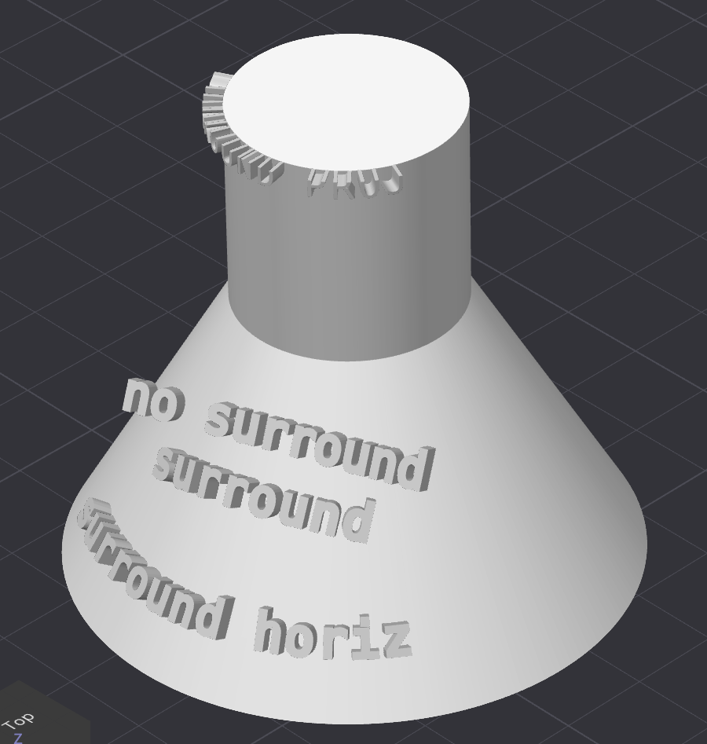
Operation defines how the text is applied to the object:
Part embosses the text on the object.
Use Embedded depth to sink the text into the object (e.g., 1-2mm) because just printing on the surface on the object might not be enough to securely adhere to the object. Embedding past the surface creates a tighter physical connection to hold the text in place.
Cut indents the text into the object.
Use Embedded depth to sink the indent into the object.
Modifier doesn't change object's geometry, but modifies the printing parameters for the area of the object where the text overlaps (e.g., change color where text sits).
Typically used for creating 2D text patterns that are perfectly flush with the object's surface (e.g., fuzzy skin or different filament).

An SVG outline can be placed on an object, extruded from an object, indented on to an object, or placed as a standalone extruded object on its own.
To generate a standalone SVG outline, right-click on to empty space (not on an object) to open the context-menu and navigate to Add Primitive → SVG. In the pop-up dialog that shows up, select an SVG file. The selected SVG will show up in the 3D viewport as slightly extruded (Z-scale to adjust the extrusion).
To place an SVG outline on an object, right-click on an object to open the context-menu and navigate to Add Primitive → SVG. In the pop-up dialog that shows up, select an SVG file. The selected SVG will show up in the 3D viewport as slightly extruded (Z-scale to adjust the extrusion). The SVG wil show up on the object along with a pop-up where and how the SVG placed on the object can be changed.
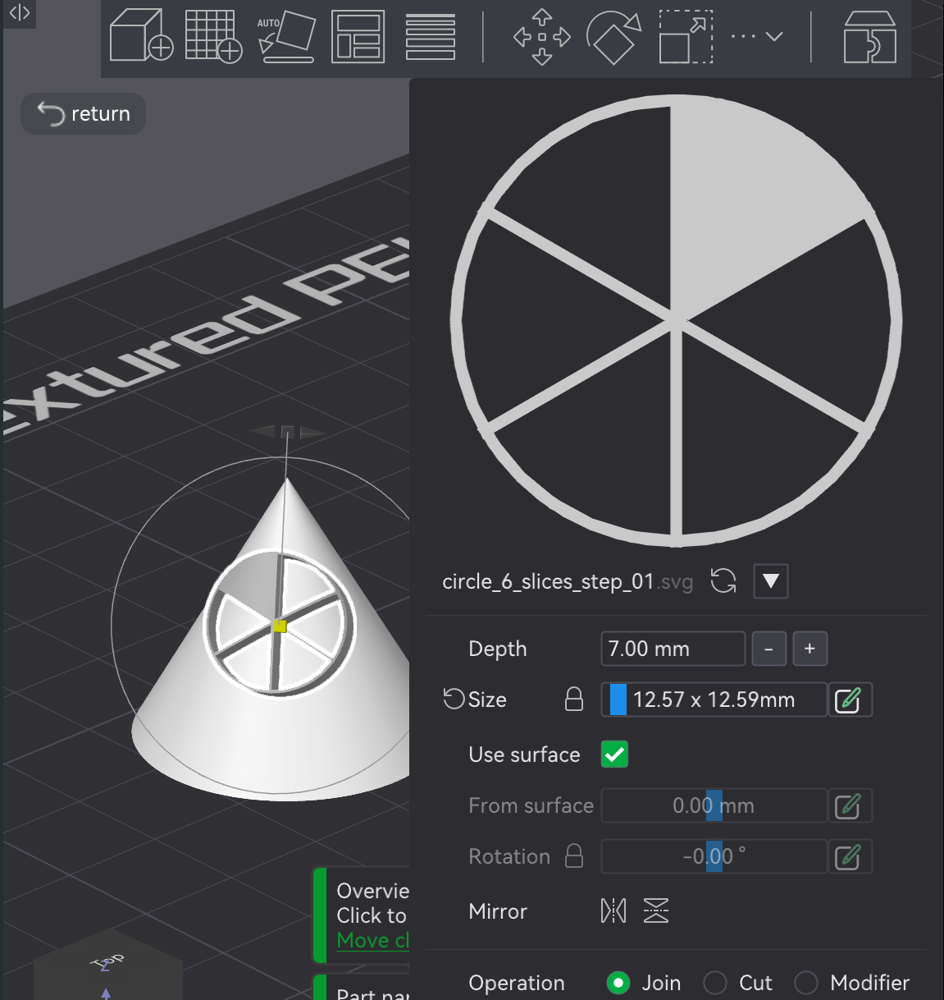
The majority of the parameters are self-explanatory.
Operation defines how the text is applied to the object:
Join embosses the text on the object.
Use Depth to sink the text into the object (e.g., 1-2mm) because just printing on the surface on the object might not be enough securely adhere to the object. Embedding past the surface creates a tighter physical connection to hold the text in place.
⚠️NOTE️️️⚠️
Printing on the surface on the object might not be enough securely adhere to the object. Once the icon has been placed, it's added under an assembly along with the object. Select the icon and move it slightly into the object. Embedding past the surface into the actual object creates a tighter physical connection to hold the icon in place.
Cut indents the text into the object.
Use Depth to sink the indent into the object.
Modifier doesn't change object's geometry, but modifies the printing parameters for the area of the object where the text overlaps (e.g., change color where text sits).
Typically used for creating 2D text patterns that are perfectly flush with the object's surface (e.g., fuzzy skin or different filament).
Use surface wraps the icon around the surface. If unchecked, the From surface and Rotation fields will be enabled.
Size is is the size of the icon.
Mirror buttons are helpers to flip the icon.
⚠️NOTE️️️⚠️
There's some weirdness about how the icon is projected on to the surface of the object. If you have something with a curved surface (e.g., cone) and project a large icon that wraps around the cone, it only applies the part of the icon that's projected on to the viewport? If you apply it and then rotate the object, you'll see that the sides you weren't looking at didn't have the icon cut off
↩PREREQUISITES↩
Layer height is the height of each layer in the print. The thinner the layer, the less ridges are visible as the object is printed upwards (Z axis), meaning a smoother overall appearance.
To set the layer height globally, ensure no object is selected and navigate to the properties under Quality → Layer height:
In addition, there are presets available for choosing common layer heights. These presets typically also set other other options, such as printing speeds.
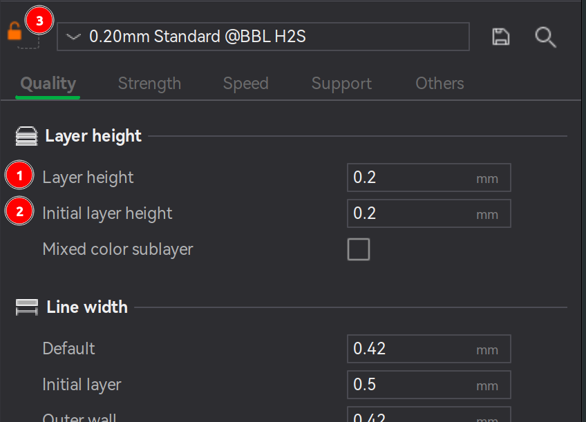
⚠️NOTE️️️⚠️
Setting different layer heights for each object? You might need to print the objects individually or slicing will fail. Set Other → Special mode → Print sequence to By object.
There might be issues where the toolhead can move depending on height of objects being printed. See here for potential way to mitigate (change print order).
⚠️NOTE️️️⚠️
There's an option here called "Mixed color sublayer" that seems to have to do with "fake color" printing where alternating real colors are banded together to generate some other color (e.g., alternating between black and white to get 50% gray). When this setting is set, it seems that the layer height is automatically cut down for coloring purposes? So if you set the layer height to 0.2mm but this option were turned on, that 0.2mm would actually be subdivided into n thinner layers? At least that's the vibe I got from https://www.reddit.com/r/BambuLab/comments/1ssuuqx/color_mixing_and_mixed_color_sublayer_wrt_layer
The initial layer height is recommended to be 50% of the nozzle's diameter. Subsequent layers are recommended to be between 20% to 70% of the nozzle's diameter. For example, if using the 0.4mm nozzle that comes with the H2S, the initial layer would be set to a layer height of 0.2mm and the remaining layers can be set to anywhere between 0.08mm to 0.28mm. This information is also available under the printer setting's Extruder section.
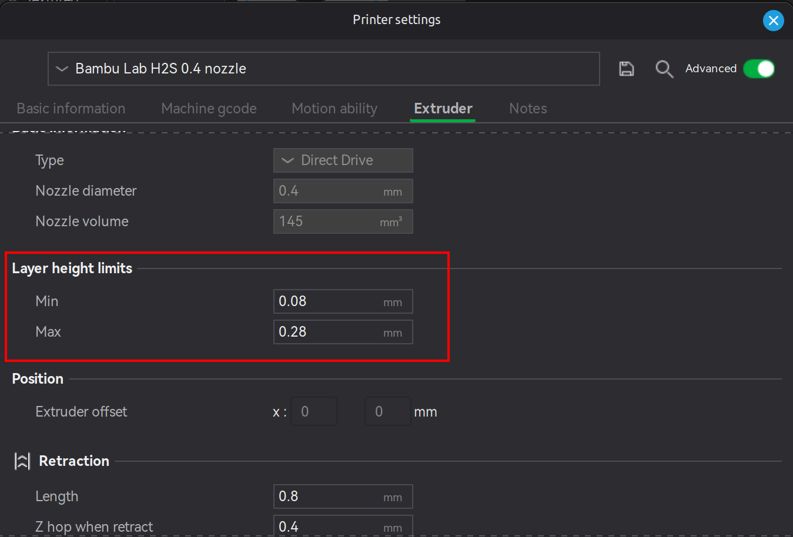
↩PREREQUISITES↩
In certain cases, it's more efficient for an object's layer height to be variable. For example, consider printing a half sphere. As the layers converge to the top of the half sphere, the slope gets more and more horizontal, leading to obvious stepping.
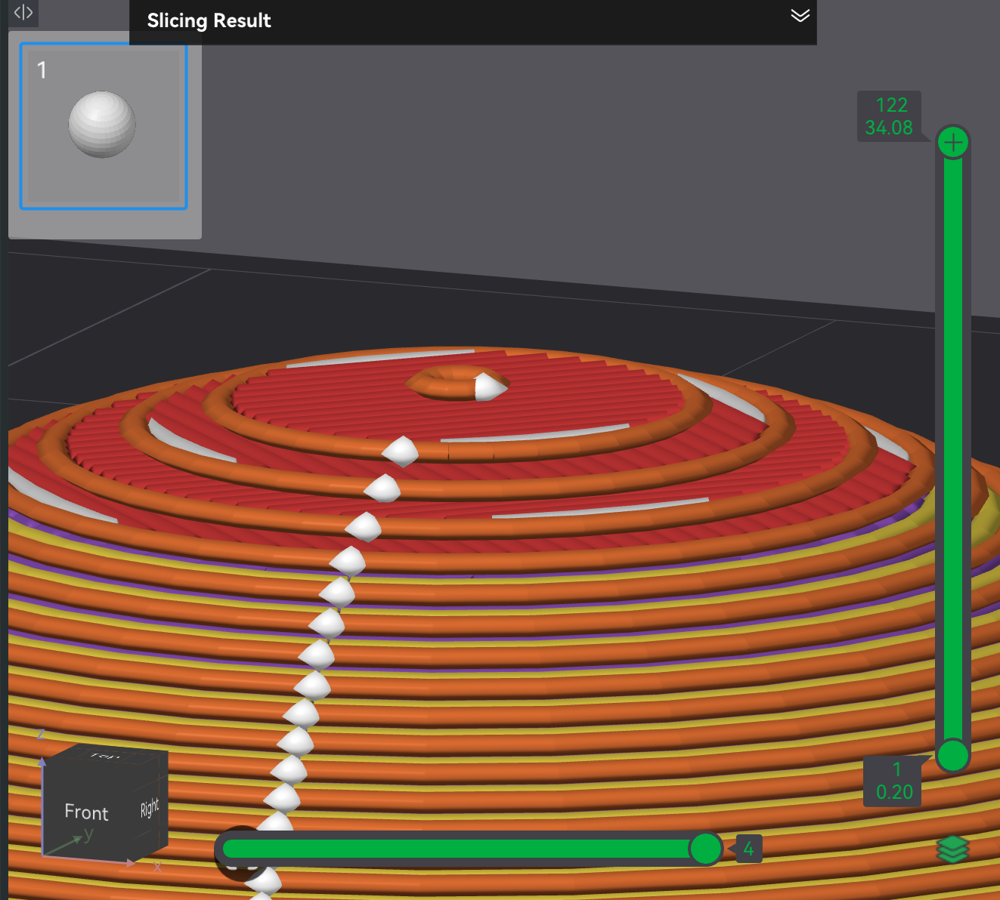
One way to mitigate stepping is to set the layer height to something very small (e.g., 0.08), but doing so is inefficient as the majority of the sphere doesn't have such a problematic slope. A more appropriate way to mitigate is to use the variable layer height tool. In the Prepare screen's 3D viewport, select an object and click the variable layer tool in the Prepare screen's toolbar (button 5), which will ...
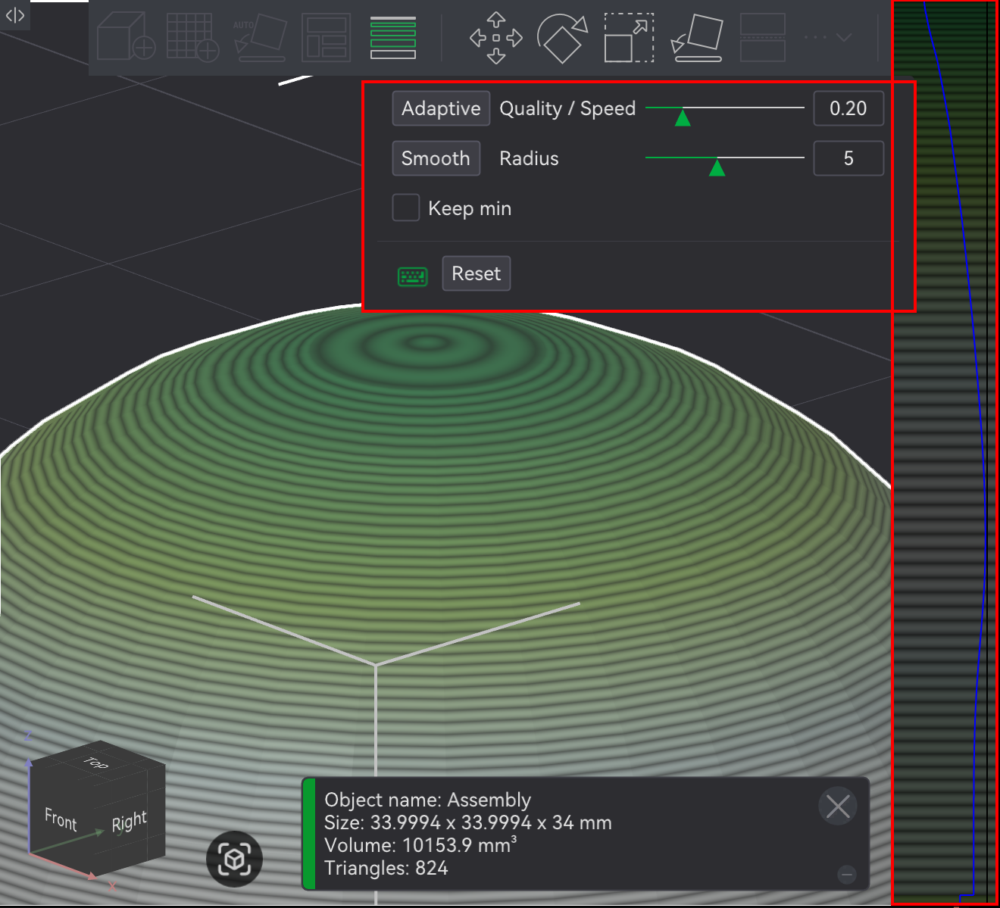
The right panel pop-up represents the layer height of the object. As the mouse scans over it bottom to top, the corresponding object in the 3D viewport should highlight indicating what portion of the object the current mouse position controls. At any height in the right panel, ...
The dialog pop-up provides functionality to algorithmically set / manipulate the variable layer height (as opposed to the manual setting happening above):
⚠️NOTE️️️⚠️
From this page:
When using variable layer height, avoid overly sharp changes in the layer height curve—meaning changes that occur too abruptly. Sudden transitions in layer height can leave visible marks or banding on the model’s surface.
As shown in the image, the left example features a steep and jagged layer height curve, which leads to noticeable surface artifacts. On the right, smoother transitions result in a cleaner and more uniform surface finish.
When applying variable layer heights, ...
⚠️NOTE️️️⚠️
What about other styles of tree supports (e.g., tree slim)? Other styles seem to not produce an error.
🔍SEE ALSO🔍
↩PREREQUISITES↩
Line width is the width of filament extruded by the nozzle during printing. To get the extruded filament to lay down either wider or thinner, the print speed changes and / or the rate at which filament is being pushed out changes (flow rate). For example, to print with a wider line width, the nozzle's head may print at the same speed but push out more filament. That is, the layer is being printed at a specific height and speed, but pushing out more filament at that layer height and speed causes that extra filament to get flattened by the nozzle's tip as it's being laid down, spreading to the desired line width.
⚠️NOTE️️️⚠️
Because having a wider line width relies on something being under the nozzle to squish against, it won't work when printing overhangs and bridges. Does this apply to overhangs and bridges that have supports? Probably, because unless you're using specific Bambu Lab filaments intended to be used as supports, there typically is both a XY-axis gap and Z-axis gap between the support and what it's supporting (with support filaments you can set these gaps to 0 but with normal filaments that gap needs to be there to make it easy to break off supports).
To set the line width, navigate to the properties under Quality → Line width:
⚠️NOTE️️️⚠️
Although First layer may help with bed adhesion, it also may make elephant foot phenomenon worse? I'm not sure.
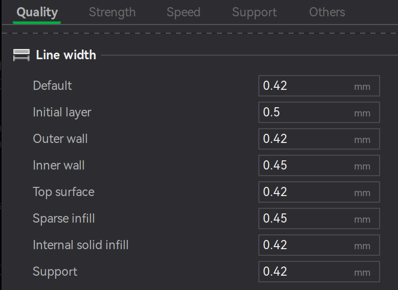
The line width is recommended to be 75% to 150% of the nozzle's diameter. Otherwise, the print quality will likely be poor. For example, if using the 0.4mm nozzle that comes with the H2S, the line width should be between 0.3mm and 0.6mm.
⚠️NOTE️️️⚠️
When referring to the nozzle's diameter, it means the diameter of the channel that the filament extrudes through, referred to as the inner diameter. The outer diameter is the diameter of the wall encasing the inner diameter.
↩PREREQUISITES↩
A seam is a mark that shows up when the toolhead prints an enclosed path, showing up where the start and end of the path meet. The screenshot below highlights where seams will show up on an example object once printed.
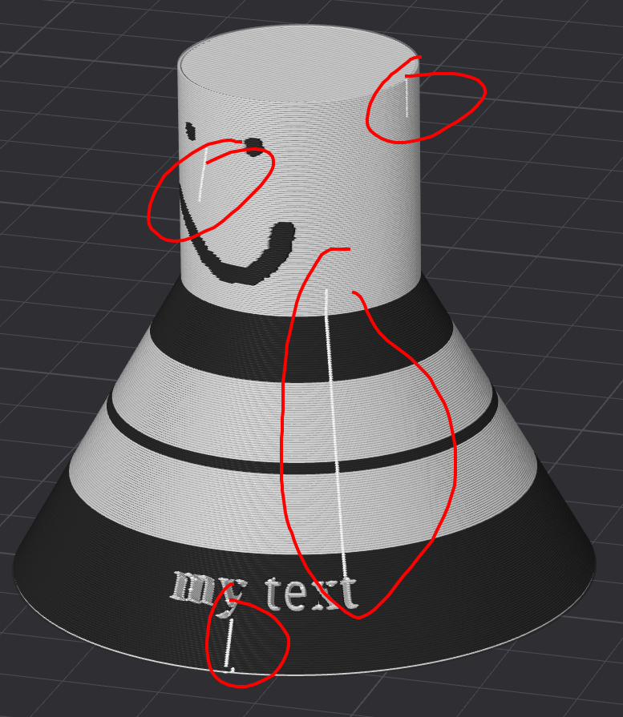
There are several ways to control the appearance of seams: Algorithmic placement (e.g., hiding seams on edges), manual placement (e.g., seam painting), and specialized printing techniques (e.g., scarf seams). The subsections below detail the common methods to mitigate seams.
⚠️NOTE️️️⚠️
Although not documented in any of the subsections below, the fuzzy skin feature can also help mitigate the appearance of seams by introducing a randomly jittered textured outside.
⚠️NOTE️️️⚠️
Where as normally there's a single seam on an object, the Arachne wall generator causes multiple starts/stops per path, meaning multiple seams.
Bambu Studio can algorithmically control the placement of seams in several ways. The easiest is through the Quality → Seam → Seam position parameter. The value ...
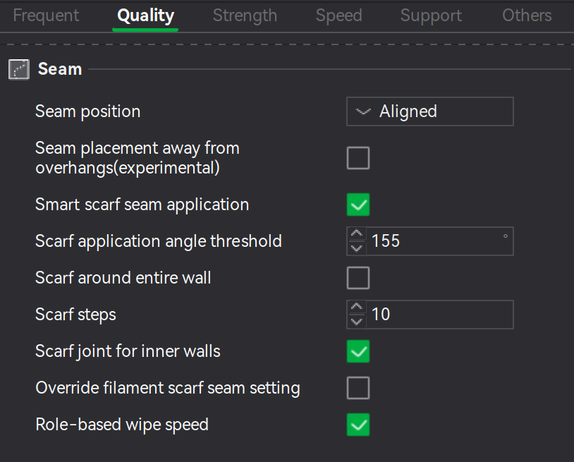
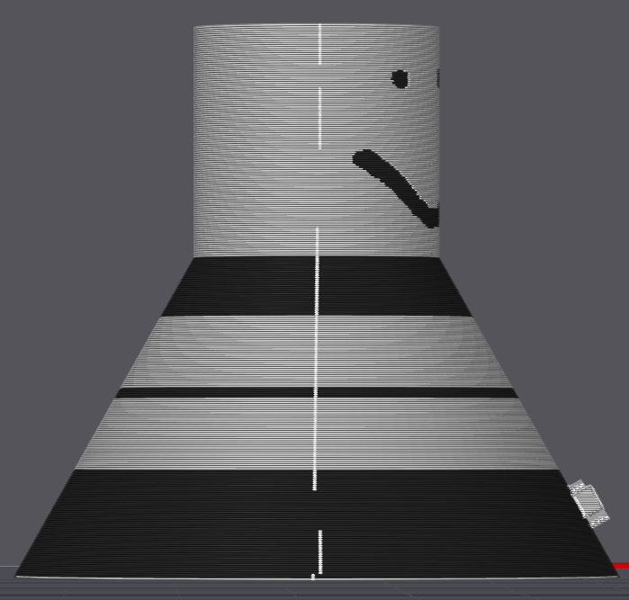
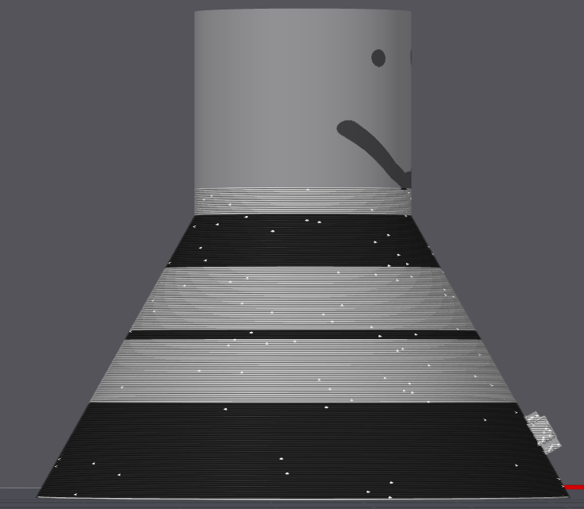
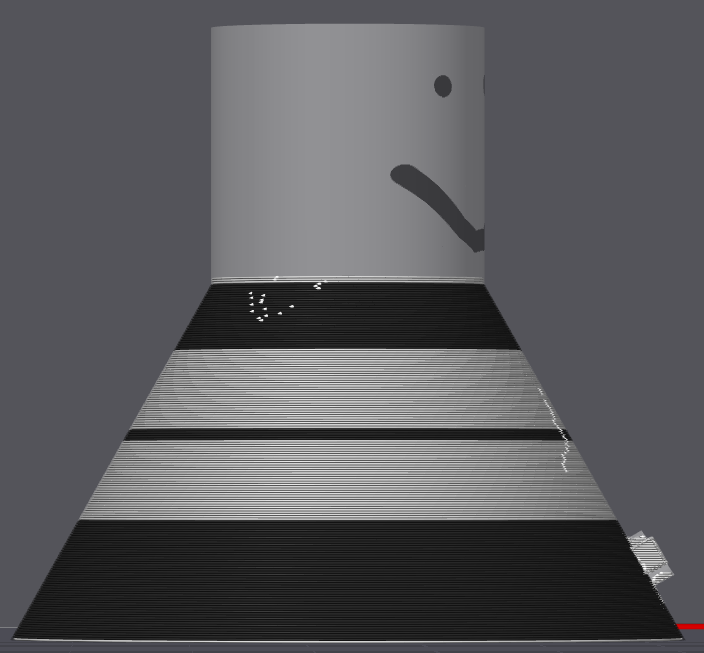
Similar to object painting, the placement of a seam can be painted on to the object. In the Prepare screen's 3D viewport, select the object and paint a seam by using the seam paint tool in Prepare screen's toolbar (button 17, keyboard shortcut P), which will present a pop-up with painting parameters / controls.
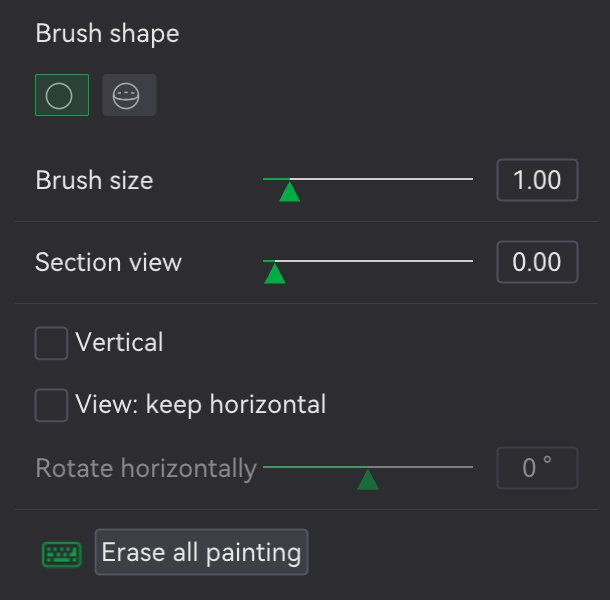
Seam painting is operationally similar to normal object painting:
During slicing, the seam should show up in the areas painted forced / not show up in areas painted prohibited.
A scarf seam is a specialized form of seam, intended to hide its appearance for objects that are round to the point where the seam can't be hidden (e.g., sphere, cylinder, or some round object that contains no natural edge for the seam to hide). At the ...
The end result is the the start-stop region partially overlap vs a hard start-stop, blending in better.
-------------. ,-----------
end ,' ,'
,' ,'
,' .'
.' .'
.' .' start
--' '-------------
For scarf seams to be enabled, the filament being printed with must have scarf seams enabled in its filament settings: In the Prepare screen's sidebar, navigate to Project Filaments, then select the ellipsis for the desired filament and navigate to Filament → Filament scarf seam settings
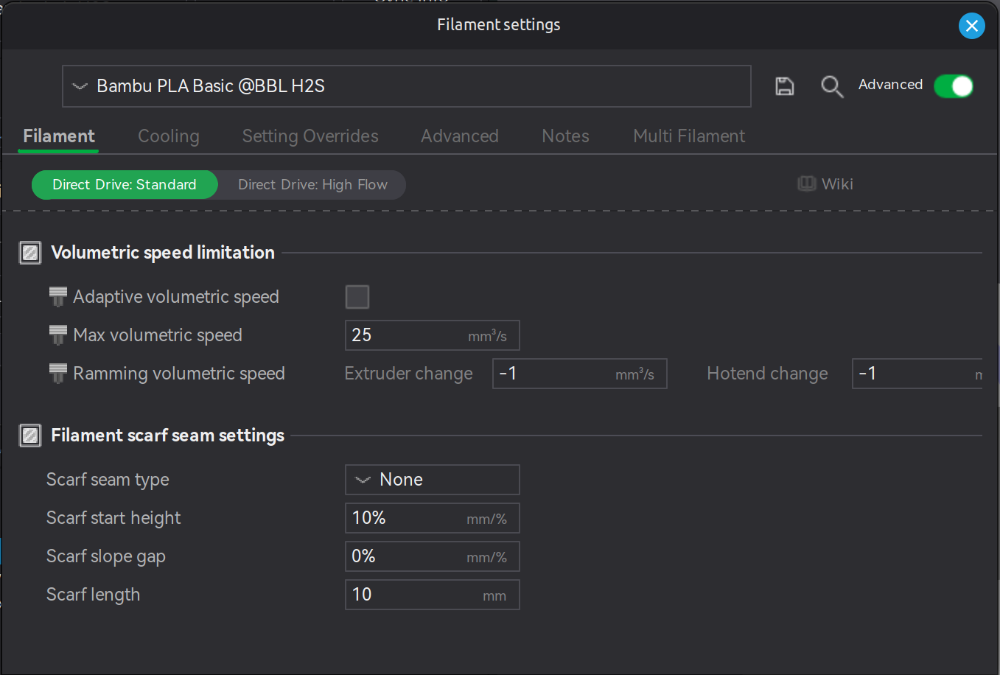
⚠️NOTE️️️⚠️
Unsure what "Contour" and "Contour and Hole" refer to? See here.
Unsure what the slope gap parameter actually does? It leaves a gap in the inner wall so the exterior wall can bleed extra material into it?
Scarf start height is the starting height that the scarf seam starts printing at, as shown in the following ASCII diagram.
-------------. ,-----------
end ,' ,'
,' ,'
,' '
.' |
.' | start
--' '------------------
In the object's parameters, ...
when Quality → Seam → Smart scarf seam application is ...
⚠️NOTE️️️⚠️
Why not on overhangs? Because scarf seams are too weak for overhanging areas?
Quality → Seam → Scarf application angle threshold is the angle that is considered sharp enough for seams to hide in. Angles wider than this will enable scarf seams.
Quality → Seam → Scarf around entire wall makes the entire wall a scarf seam.
⚠️NOTE️️️⚠️
According to the source: Enabling this option requires caution as it may result in using a smaller extrusion amount for the entire perimeter, which may cause poor adhesion between lines and result in surface defects.
Quality → Seam → Scarf steps is the number steps to print the scarf seam. That is, the toolhead prints the scarf seam as a series of incrementing steps rather than a raised slope. This value controls the number of steps.
⚠️NOTE️️️⚠️
According to the source: ..., it should be noted that some seam positions cannot be accurately divided into the set number of steps, so the actual scarf steps ≥ the set scarf steps.
when Quality → Seam → Seam joint for inner walls is enabled, inner walls will also have a scarf seam.
Fuzzy skin is a rough texture targeting the outside wall of an object and potentially holes within that object (just the walls, top and bottom surfaces won't be textured). It does this by adding random jitters to wall paths during slicing. The purpose of fuzzy skin is two-fold: It's either aesthetic, or it's intended to make the printed object easier to grip, or both.
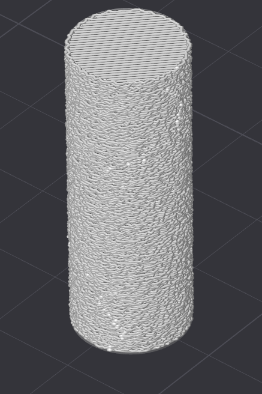
Fuzzy skin parameters are under Others → Special mode.
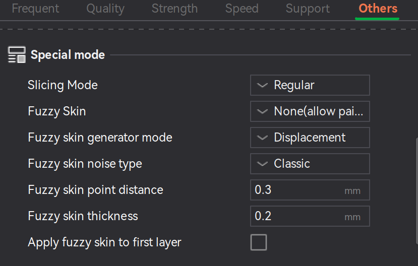
To enable/disable fuzzy skin set the property Fuzzy skin to either ...
If enabled, the parameter ...
Fuzzy skin point distance controls the interval at which the jitter is updated. For example, setting it to 1mm produces smoother grooves vs 0.2mm because the toolhead's position is getting randomly offset every 1mm instead of 0.2mm.
Fuzzy skin thickness controls the depth of the nozzle jitter, making the fuzziness more pointy. A value too high may cause overhang issues.
Fuzzy skin generator mode controls how fuzzy skin is printed. A value of ...
Fuzzy skin noise type controls which algorithm is used to generate the noise that the toolhead's jittering is based off of.
Apply fuzzy skin to first layer controls whether the first layer's walls should have fuzzy skin applied.
⚠️NOTE️️️⚠️
Why would you want to texture inner walls? Makes no sense? Doesn't also conflict with the infill?
↩PREREQUISITES↩
Rather than having walls be fuzzy skinned in their entirety, the object can have fuzzy skin painted on to particular areas such that only those painted areas print as fuzzy skin. In the Prepare screen's 3D viewport, select an object and click fuzzy skin painting in the Prepare screen's toolbar (button 19, keyboard shortcut H). Bambu Studio will open a pop-up and present an isolated view of the object where areas can be painted.
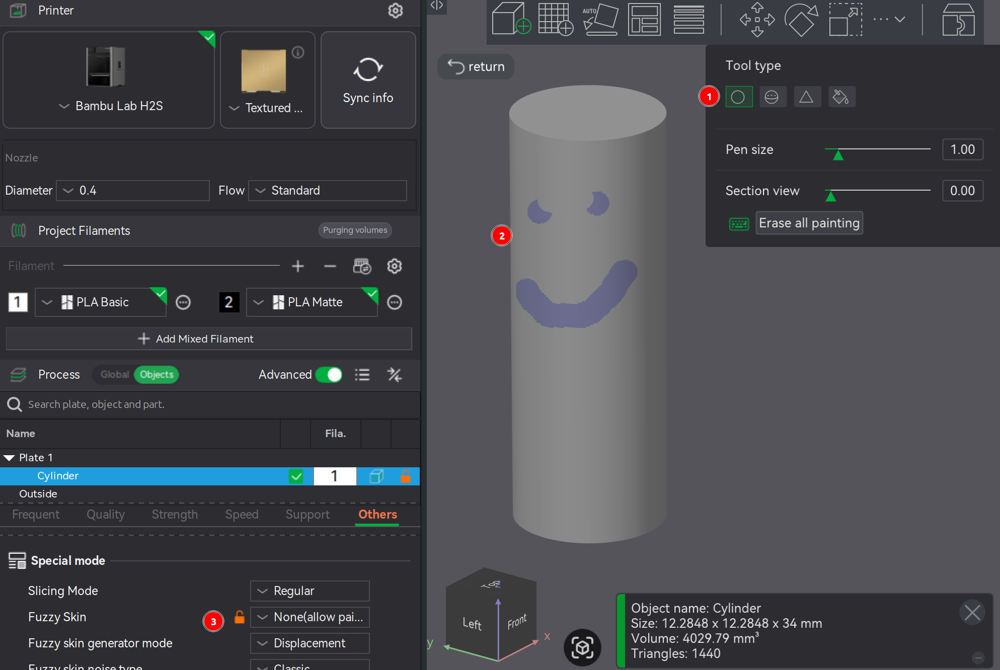
Tool options and controls are nearly exactly the same as those for normal object painting. Select a Tool type and the tools configuration options will show up directly underneath. Regardless of the tool type, ...
To move the viewport rather than paint (e.g., move camera, rotate camera, and zoom camera), use the same viewport controls as normal with the exception that any mouse button presses required are not on the object to be painted.
For painted fuzzy skin to be applied to the print, ensure Other → Special Mode → Fuzzy Skin is set to None(allow paint).
↩PREREQUISITES↩
A skirt is one or more loops printed around the objects on the build plate, where there's a gap between the loops and the objects (not touching). The purpose of a skirt is to prime the nozzle. It's typically not required on the H2S because the nozzle already gets primed when a print starts by printing a small line, called a prime line.
Nevertheless, skirt loops can be enabled through the property Other → Bed Adhesion → Skirt loops and Skirt height. The example below has 4 loops set at a layer height of 2.
⚠️NOTE️️️⚠️
Skirt loop parameters only show up when the scope is set to global, not on an object / set of objects.
↩PREREQUISITES↩
A brim is several outer walls added around the bottom layer of a printed object, such that the object has a bottom similar to the brim of a top hat. Its purpose is to enhance bed adhesion of objects ...
Brim parameters are under Other → Bed Adhesion.
The parameter ...
Brim type defines how and what type of brim is applied. A value of ...
🔍SEE ALSO🔍
Brim width defines the distance between the outer-most bring and the printed object (how wide the brim is).
Brim-object gap defines the distance between the inner-most brim line and the printed object. A smaller gap typically improves the connection to the object while a larger gap makes pulling off easier.
⚠️NOTE️️️⚠️
If gap is 0 but there's still a gap showing up between the brim and the object, it may be that Quality → Elephant foot compensation is non-zero. Set it to 0.
🔍SEE ALSO🔍
↩PREREQUISITES↩
A brim ear is a point / stretch of brim at user-defined locations around the bottom of an object. Similar to object painting, the placement of brim ears can be painted on to the object. In the Prepare screen's 3D viewport, select the object and paint brim ears by using the brim ear tool in Prepare screen's toolbar (button 18, keyboard shortcut E), which will present a pop-up with painting parameters / controls.
For brim ears to be printed, ensure Other → Bed Adhesion → Brim type is set to Painted. Otherwise, a warning will display at the bottom of the pop-up as shown in the example above.
To place brim ears manually, left-click around the base of the object. When a brim ear is placeable, a partially transparent brim ear will show under the mouse, notifying that a brim ear can be placed in that spot. The brim ear's size is controlled by the Head diameter parameter, which is the diameter of the brim ear in mm.
To place brim ears automatically, use the Aut-generate points button. Where brim ears get placed depends on ..
⚠️NOTE️️️⚠️
Brim ears will be invisible once exiting this tool, only being visible again when re-entering the tool on the same object or in the Preview screen post-slicing.
⚠️NOTE️️️⚠️
I found this as well: https://wiki.bambulab.com/en/software/bambu-studio/use-disc-to-avoid-warping. This seems to be doing the same thing as brim ears but its entirely manual? Maybe it was made for an older version of Bambu Studio where brim ears feature wasn't available.
↩PREREQUISITES↩
The number of walls printed for an object (Z axis) is set through the parameter Strength → Walls → Wall loops. The more walls, the stronger the print is (presumably). It's recommended that for ...
The number of solid layers for the top of the object is set through the parameter Strength → Top/bottom shells → Top shell layers. The thickness of the top shell should approximately match the thickness of the walls. For example, if the thickness of 5 walls comes out to 5mm, then the number of top shell layers should approximately come out to 5mm as well.
⚠️NOTE️️️⚠️
Prior to the top shell is the infill material. The infill material almost always has gaps, and so the that first shell layer is bridging all those gaps.
Similarly to the top shell layers, the number of solid layers for the bottom of the object is set through the parameter Strength → Top/bottom shells → Bottom shell layers. It's recommended that the bottom shell have a minimum of 4 layers to ensure a sturdy and flat foundation.
⚠️NOTE️️️⚠️
Why shouldn't the bottom shell have the same thickness as the walls and top shell? Wouldn't that make more sense in that it's unified?
⚠️NOTE️️️⚠️
There are the alternative parameters Top shell thickness / Bottom shell thickness that set using mm instead of number of layers. When set, the number of layers chosen is the maximum between Top shell layers / Bottom shell layers and the number of layers needed to match the thickness of Top shell thickness / Bottom shell thickness.
↩PREREQUISITES↩
While the exterior of a printed object are walls / surfaces, the interior area of is printed as an infill pattern. An infill patterns is a pattern where the user controls how densely the pattern is printed, where higher densities are typically associated with greater strength / greater load bearing capacity.
Infill parameters are found under Strength → Sparse infill:
Sparse infill density controls the density of the infill. Infill densities of ...
Sparse infill pattern is the infill pattern to use.
| Pattern | Target | Details |
|---|---|---|
| Concentric | Aesthetic | Transparent visuals; weak horizontal strength |
| Rectilinear | Speed | Fast, low material; low strength |
| Grid | Speed | Fast; material buildup at intersections → nozzle scraping/collisions |
| Line | Strength | Better basic structure |
| Cube | Strength | Uniform X/Y/Z strength; lightweight/insulating |
| Triangles | Strength | Strong shear resistance; bridging gaps → needs more top layers, flow issues at intersections |
| Tri-hexagon | Strength | Excellent shear + tensile strength; reduces warping |
| Gyroid | Strength / Speed | All-direction support; long slicing time, large G-code, vibration at high speed |
| Honeycomb | Strength | High rigidity + impact resistance; more material, slower print + slicing |
| Adaptive Cubic | Speed / Functional | Saves material; prevents top collapse |
| Aligned Rectilinear | Speed | Efficient; anisotropic strength, top surface may fall |
| 3D Honeycomb | Strength | Better interlayer bonding; faster than honeycomb |
| Hilbert Curve | Aesthetic / Strength | Smooth surface, uniform stress; slow print + slicing |
| Archimedean Chords | Speed / Quality | Continuous path; avoids buildup |
| Octagonal Spiral | Aesthetic | Decorative; weak strength, poor cohesion → deformation |
| Supporting Cubic | Strength | Stable multi-directional strength |
| Lightning | Speed | Minimal material; non-structural |
| Cross Hatch | Speed | Faster; non-load-bearing |
| Zig Zag | Speed | Continuous extrusion; low strength |
| Cross Zag | Structural Control | Tunable intersections (rectilinear variant) |
| Locked Zag | Hybrid | Balanced appearance + strength |
⚠️NOTE️️️⚠️
List above generated by ChatGPT as a quick lookup guide.
In addition to the standard infill, it's possible to specify infill patterns for the top and bottom surfaces using the parameters Strength → Top/bottom shells → Top surface pattern and Bottom surface pattern. The patterns available are more limits than the full roster of infill patterns.
⚠️NOTE️️️⚠️
Top/bottom shells also get infills at no sparsity (100% fill), called internal solid infills? The top/bottom shells don't include the top-most and bottom-most layers? So if you have 5 top shells, the 5th one (top-most) isn't internal solid infilled, but all the ones before are? That's what this is telling me.
⚠️NOTE️️️⚠️
Top/bottom surface patterns seem to only be line based infill patterns where lines don't intersect? And you can't set density? It seems to be maximum density?
What's the point of having these? I guess it has to do with the finish of the surface? I recall there was some option where you could have the heated nozzle go over the surface (without printing anything) to further smooth it out? I think it was under Quality → Ironing.
The subsections below detail how to inspect and diagnose aspects of the print.
↩PREREQUISITES↩
Printed objects that require accurate fitting with other components (e.g., screws or other printed parts) sometimes don't fit they way they should because of variances introduced during printing. For holes and contours running running down the Z-axis, Bambu Studio provides calibration steps to compensate for these variances:
Contour - The outer perimeter of the object as printed up the Z-axis (collective outer perimeters of the layers that make up the printed object). The example above is the object of a salad bowl. The shape of the unhollowed out bowl is the contour.
Hole - The perimeter of a void/cavity within an object as printed up the Z-axis. The example above is the object of a salad bowl. The shape of the hollow/indent in bowl is considered a hole.
An object may have multiple holes. Types of common holes include threaded holes for screws / bolts, drainage holes, and holes for connectors (e.g., dowels).
The process involves printing a test object and either using calipers or a standard screw to determine how far off the hole/contour is from its intended baseline. That value can then be inserted into an object's properties under Quality → Precision → X-Y hole compensation and X-Y contour compensation.
⚠️NOTE️️️⚠️
The auto compensation option in the screenshot above disables the manual compensation fields? Description says it works with the basic set of filaments (e.g., PLA and PETG) - maybe it's good enough?
⚠️NOTE️️️⚠️
Remember that holes and contours on the z-axis are holes that are compensated for using XY hole contour compensation. It does not compensate for sideway holes.
Hole / contour compensation may be needed because ...
For full instructions along with what exactly to print / measure, see the source document.
↩PREREQUISITES↩
On a layer, gaps below a certain threshold are merged during slicing. This threshold is controlled via the property under Quality → Precision → Slice gap closing radius. Any gap smaller than 2x this property's value is automatically closed during slicing (e.g., if set to 0.05mm, gaps smaller than 0.1mm are closed).
In the examples above, the first screenshot has Slice gap closing radius set to 0.13mm while the second screenshot has it set to 0.02mm.
↩PREREQUISITES↩
By default, slicing removes or distorts areas of a contour / hole where the shape is a thin stretch, pin extrusion, or sharply acute corner. That is, if there are two points on the shape's outline with a distance less than the line width, it wouldn't be able to reliably print and so the slicer attempts to work around the "thinness" by distorting or removing it. Real world examples where this might be encountered include models containing of fan blades, thin tubes, line art, and small text.
⚠️NOTE️️️⚠️
These areas are colloquially referred to as thin walls (not to be confused for a printed object's walls), because the problematic shape often (but not always) resembles a thin wall-like structure.
One workaround is to narrow the line width of the entire object being printed. However, a more appropriate and efficient workaround is to set the property Quality → Wall generator to → Arachne. Of the two options for Quality → Wall generator, ...
Arachne helps mitigate the thinness problem described above at the expense of more seams. That is, where as there's typically a single seam on an object, with Arachne there may be multiple seams. Arachne starts and stops rather than pushing out a continuous stream of filament, and so each start-stop results in a seam.
⚠️NOTE️️️⚠️
There's also an option for the classic wall generator to help with this thinness problem: Detect thin wall. It seems to be more problematic to use than Arachne wall generator? See source for more information.
Once Arachne is enabled, the extra properties displayed in the screenshot above become present:
⚠️NOTE️️️⚠️
The other properties seem like advanced properties that control knobs/levers of the algorithm? It might not make sense to document them here because, even though the source documents them, they seem like internal concepts and it doesn't say what sense there is in changing them?
⚠️NOTE️️️⚠️
What happens to all the normal line width properties once Arachne is enabled? Do they just get ignored?
↩PREREQUISITES↩
Objects with a contours / holes that curve on the Z-axis (e.g., sphere and donut) experience a type of artifacting called stair-stepping, where as the curve's slope aggressively becomes more and more horizontal, overtly visible steps appear between neighboring layers.
⚠️NOTE️️️⚠️
This is sometimes called Z-axis aliasing?
To mitigate stair-stepping, either ...
⚠️NOTE️️️⚠️
There seems to also be a hidden developer property Quality → Advanced → Top area threshold that sets the threshold for what top surfaces use wall loops's count vs a single surface. I can't find this in my Bambu Studio. See https://wiki.bambulab.com/en/software/bambu-studio/parameter/quality-advance-settings.
↩PREREQUISITES↩
An elephant foot is a phenomenon where the first layer of a print slightly splays out. This happens because the first layer sits on a heated build plate and doesn't appropriately cool, and so either through the non-cooling itself or through the non-cooling along with subsequent layers weighing down on it, causes the first layer to squish and splay.
Elephant foot compensation is an property, located under Process → Quality → Elephant foot compensation, that shrinks the first layer. Shrinking the first layer is intended to compensate for the splaying that happens.
⚠️NOTE️️️⚠️
The elephant foot phenomenon isn't typically a problem unless it's preventing parts from fitting together.
⚠️NOTE️️️⚠️
Elephant foot compensation causes brims to not work properly. They shrink? For it to work properly, compensation must be turned off.
⚠️NOTE️️️⚠️
A raft can guard against the elephant foot problem?
↩PREREQUISITES↩
Flow dynamics calibration compensates for lags in extrusion. These lags are a result of nozzle pressurization: When filament is extruded, it takes time for pressure in the nozzle to build up to a level where plastic flows consistently. When the toolhead ..
Flow dynamics attempts to compensate for the problems above by preemptively adjusting filament flow. This compensation improves print quality, especially when printing complex shapes at higher printing speeds (e.g., cleaner corners and sharper details).
Flow dynamics calibration should be performed whenever ...
While some other Bambu Lab printers have automatic flow dynamics calibration (e.g., H2D), the H2S require manual calibration. The steps for manual flow dynamics calibration are as follows:
Ensure the filament is dry / fresh and the nozzle has no blockages.
Filaments should always be dry when printing. Damp filaments will render the calibration results unsuitable for use with fresh filament.
Ensure build plate is of correct type and clean.
Navigate to the Calibration page, select Flow Dynamics in the sidebar, and then click the Manual Calibration button at the bottom of the main page. It should switch the page to a Flow Dynamics Calibration page with input fields.
On the Flow Dynamics Calibration page, select the appropriate options and parameters, then click Calibrate. Printing of a test pattern should start once Calibrate is clicked.
Choose the installed nozzle diameter, build plate, and filament for calibration.
⚠️NOTE️️️⚠️
What happens if I want to calibrate for a soft material?
What happens if I'm using a filament material that's not suited for Smooth PEI build plate or Textured PEI build plate? Why can't I use an engineering plate so that I can target any material?
Set Method to Pattern.
Set From k Value / To k Value to 0 to 0.05
Set Value step to 0.002.
Once the test pattern has finished printing, visually inspect and find the number corresponding to the cleanest printed corner.
There should be numbers running down the right-hand side and 90 degree corners which those numbers correspond to on the left-hand side. Find the number with the cleanest / sharpest corner, where the corner has the least bulging or fraying.
↩PREREQUISITES↩
Flow ratio is a scaling factor that adjusts the actual amount of filament extruded vs the theoretical amount calculated by the slicer. The flow ratio helps mitigate problems with over-extrusion and under-extrusion.

⚠️NOTE️️️⚠️
From the source:
Different materials have varying melting properties, flowability, and shrinkage rates, so the optimal Flow Ratio required for each material differs. For example:
- PLA: Generally has good flowability, and the default value is often close to optimal.
- PETG: Often has lower flowability and tends to accumulate on the surface. It may be necessary to slightly lower the Flow Ratio.
- TPU: With its high flexibility, TPU is highly compressible in the extruder and has a relatively slow extrusion speed. It may require an increased Flow Ratio.
- PA: Has average flowability but is highly hygroscopic. When it absorbs moisture, its flowability changes significantly. It is crucial to keep the material dry, and the calibration value will vary with humidity.
While some other Bambu Lab printers have automatic flow ratio calibration (e.g., X1), the H2S require manual calibration. The steps for manual flow dynamics calibration are as follows:
⚠️NOTE️️️⚠️
The website recommends to perform flow ratio calibration after dynamic flow calibration, but doesn't dynamic flow calibration depend on the flow ratio? Shouldn't this be the other way around?
Ensure the filament is dry / fresh and the nozzle has no blockages.
Filaments should always be dry when printing. Damp filaments will render the calibration results unsuitable for use with fresh filament.
Ensure build plate is of correct type and clean.
Navigate to the Calibration page, select Flow Rate in the sidebar, and then click the Manual Calibration button at the bottom of the main page. It should switch the page to a Flow Rate page with input fields.
On the Flow Rate Calibration page, select the appropriate options and parameters, then click Calibrate. Printing of a test pattern should start once Calibrate is clicked.
Choose the installed nozzle diameter and build plate, and filament for calibration.
⚠️NOTE️️️⚠️
What happens if I'm using a filament material that's not suited for Smooth PEI build plate or Textured PEI build plate? Why can't I use an engineering plate so that I can target any material?
Set Calibration Type to Complete Calibration.
Once the test pattern has finished printing, visually inspect and find the number corresponding to the smoothest surface.
There should be numbers on each tab printed. View under side lighting and find the number with the cleanest surface, where there is no bulging or indents.
⚠️NOTE️️️⚠️
The pictures above are from the Bambu Lab wiki, and they show that 5 is actually better than 0. That's why they're recommending a side lighting? So the indents / bulges are more visible.
On the Flow Rate Calibration page, click Next. It should switch to page asking for the number with the smoothest top. Input the found number from the previous step and click Calibrate. Printing of a second test pattern should start once Calibrate is clicked.
Once the test pattern has finished printing, visually inspect and find the number corresponding to the smoothest surface.
There should be numbers on each tab printed. View under side lighting and find the number with the cleanest surface, where there is no bulging or indents.
On the Flow Rate Calibration page, click Next. It should switch to page asking for the number with the smoothest top. Input the found number from the previous step and click Finish.
↩PREREQUISITES↩
The slicer output shown in the Preview Screen helps identify problems prior to printing.
Of the Color schemes available, the following ones help highlight problems:
These color schemes can help diagnose issues before printing:
For more information, see the source.
FreeCAD is a parametric modeling tool. It contains different segments of functionality, referred to as workbenches. Each workbench targets a different aspect of the overall design workflow (e.g., sketching, turning sketches into 3D objects, and assembling 3D objects together).
The following subsections give a basic overview and usage reference for the subset of workbenches related to 3D printing.
⚠️NOTE️️️⚠️
This section assumes you have past experience with some 3D editors.

Regardless of which workbench you're in, FreeCAD's UI will likely have the sections highlighted in the screenshot above. Almost everything in the toolbar can also be accessed via the main menu and triggered via a keyboard shortcut.
⚠️NOTE️️️⚠️
When in doubt, click the button immediately to the right of 3 (pointer with a question mark) and select something to learn more about it.
⚠️NOTE️️️⚠️
If something is missing from your toolbar, navigate to View → Toolbars and enable as needed.
Viewport
(6) Viewport: The space in which work in performed. The viewport typically renders and allows control of geometry (e.g., 3D primitives, 2D sketches, and technical drawings). For some workbenches, the viewport displays something different than geometry (e.g., spreadsheet).
(11) Navigation cube: When working in 3D, there will be a navigation cube (located in the viewport's top right in the example) that reduces the burden rotating and reorienting viewing angles, as well as changing perspectives. Clicking the various faces of the cube as well as the surrounding icons reorient the camera and change perspective.
(12) Axis orientation: When working in 3D, the basis axes will be displayed from the current camera's orientation (located in the viewport's button right in the example).
(10) 3D viewport boundaries / spatial unit selection: When the viewport is viewing geometry, this dropdown can be used to change the units of measurement used (e.g., metric to imperial). It also displays the bounds of the viewport in those units of measurement.
(9) 3D viewport mouse controls: When working in 3D, the mouse controls can be changed to different presets using this dropdown (e.g., Blender style mouse controls vs mouse controls optimized for a trackpad).
Hovering over the dropdown displays how mouse controls for the currently selected configuration (e.g., what right-click does).
(3) 3D viewport helpers: When working in 3D, these toolbar buttons provide quick tools to adjust and reorient the view. From left-to-right, ...
Document hierarchy / operations
(4) Model pane: List of open documents, as well as the hierarchy of each open document. In the example, the document Test3 has a part design body with a sketch in it.
(5) Properties pane: For the selected items, this pane lists the properties for those items. If the item is selected within a 3D viewport, the Data tab below shows the physical properties (e.g., what it is) while the View tab below shows the visual properties (e.g., how its rendered).
Note that properties are not limited to what's selected in the viewport. When an item in the model pane is selected, it has its properties show up.
(7) Workspace tabs: Tabs to switch between workspaces.
Basic operations
(1) Basic commands: These toolbar buttons give quick access to common operations. From left-to-right, ...
(2) Workbench switcher: Drop-down that switches between workbenches.
(8) Diagnostic messages: Pop-out that displays log messages. The number displayed is the number of unread diagnostics messages.
[[self src]](data:text/html,%3C!doctype%20html%3E%0A%3Chtml%3E%0A%3Cbody%3E%0AThis%20was%20derived%20using%20self%20experimentation%20-%20there%20is%20no%20source%20other%20than%20myself.%0A%3C/body%3E%0A%3C/html%3E)
FreeCAD has a built-in spreadsheet and expression engine, accessible through the spreadsheet workbench. A spreadsheet is typically used to store parameters and run formulas, which then go on to be used as the parameters of geometry and other properties of an object. It can also go the other way, pulling data out of a model into a spreadsheet.
⚠️NOTE️️️⚠️
The entire section assumes the reader has prior experience with other spreadsheet engines (e.g., Excel).
↩PREREQUISITES↩
Basic operations
(1) Basic commands: These toolbar buttons give quick access to common operations. From left-to-right, ...
Viewport
(10) Spreadsheet: A matrix of cells, identified by column letter and row number (e.g., C3).
Type while a cell is selected to set that cell's contents. Right click on a row/column to add or remove rows/columns.
(9) Cell alias textfield: This field shows and sets the alias for the selected cell, similar to pressing the cell alias button in the toolbar. When referencing a cell, the alias can be used as a friendly name.
(8) Cell content: This field shows and sets the content of the cell, which may be a formula or a literal.
(7) Zoom slider: This slider and accompanying drop-down are used to zoom in / out of the spreadsheet.
Cell operations and properties
(2) Cell merge/split: These toolbar buttons merge and split cells. From left-to-right, ...
(3) Text alignment: These toolbar buttons align text in a cell. From left-to-right, ...
(4) Text style: These toolbar buttons stylize the text in a cell. From left-to-right, ...
(6) Cell colors: These toolbar buttons set the colors within a cell. From left-to-right, ...
(5) Cell alias button: This toolbar option launches a dialog to set an alias for the selected cell. When referencing a cell, the alias can be used as a friendly name.
↩PREREQUISITES↩
A cell's contents may be ...

As shown in the example above, formulas are unit-aware (e.g., a formula can add two angles together or two distances together). The cell displays the results in the user's desired unit system (e.g., imperial vs metric).
In addition to being set to literals, spreadsheet cells and other properties may also be set to expressions. An expression executes some piece of logic using basic operators, functions, constants, conditionals, and references to other properties (e.g., other cells or data within a model). Operators and functions are unit-aware, requiring a valid combinations of units if supplied. For example, 2mm + 4mm is valid while 2mm + 4 is not. This also applies to references to properties that have units (e.g., Pad001.Length + 1 isn't valid because it adds a pure number to a property containing a length - it requires Pad001.Length + 1mm).
Numbers in an expression may optional have a unit. The following tables contain the unit designations recognized by FreeCAD when inserting a unit (e.g., 5 mm). The following tables were pulled directly from source.
Angle
| Unit | Description |
|---|---|
| ° | Degree; alternative to the unit deg |
| deg | Degree; alternative to the unit ° |
| rad | Radian |
| gon | Gradian |
| M | Minute of arc; alternative to the unit ′ |
| ′ | Minute of arc; this is the prime symbol (U+2032); alternative to the unit M |
| S | Second of arc; DOES NOT WORK; alternative to the unit ″ |
| ″ | Second of arc; this is the double prime symbol (U+2033); alternative to the unit S |
Length
| Unit | Description |
|---|---|
| nm | Nanometer |
| um | Micrometer; alternative to the unit µm |
| µm | Micrometer; alternative to the unit um |
| mm | Millimeter |
| cm | Centimeter |
| dm | Decimeter |
| m | Meter |
| km | Kilometer |
| mil | Thousandth of an inch; alternative to the unit thou |
| thou | Thousandth of an inch; alternative to the unit mil |
| in | Inch; alternative to the unit " |
" |
Inch; alternative to the unit in |
| ft | Foot; alternative to the unit ' |
' |
Foot; alternative to the unit ft |
| yd | Yard |
| mi | Mile |
↩PREREQUISITES↩
An expression can reference properties of other objects by referencing the path hierarchy. For example, if there's a diameter named (diameter constraint) lower_initial_diam within a sketch ...
=<<my_sketch>>.Constraints.lower_initial_diam.=Sketch.Constraints.lower_initial_diam.⚠️NOTE️️️⚠️
To see the ID of objects, right click in the Model pane and navigate to Tree Settings → Show Internal Name.
⚠️NOTE️️️⚠️
If using labels, the label must be unique.
⚠️NOTE️️️⚠️
To reference a object (such as Sketch / my_sketch in the example), you must use the _self property. For example, Sketch._self.
↩PREREQUISITES↩
To reference an item in a list or tuple, use the [] operator. For example, Sketch.Constraints[0] will pull the first constraint within the sketch object.
To reference an enumeration option's text, use the [] operator in addition to referencing the enumeration option itself. For example, Pad.Type.Enum[Pad.Type] will pull out the text for Pad.Type, while Pad.Type itself will only return it's index within the enumeration.
Conditional expressions use C++ style ternary operator syntax: condition ? resultTrue : resultFalse. The condition is defined as an expression that evaluates to either 0 (false) or non-zero (true).
⚠️NOTE️️️⚠️
Any value is evaluated as zero if abs(value) < 1e-7, else it is evaluated as non-zero.
⚠️NOTE️️️⚠️
In FreeCAD 1.1, you can test a boolean directly (e.g., VarSet.MyBool ? 10 : 15) where as in older versions of FreeCAD need a relational operator (e.g., VarSet.MyBool == 1 ? 10 : 15).
Table pulled directly from source.
| Operator | Description |
|---|---|
| + | Addition |
| - | Subtraction |
| * | Multiplication |
| / | Floating point Division |
| % | Remainder |
| ^ | Exponentiation |
| == | Equal |
| != | Not equal |
| > | Greater than |
| >= | Greater than or equal to |
| < | Less than |
| <= | Less than or equal to |
⚠️NOTE️️️⚠️
From the source:
Some unit related errors can seem unintuitive, with expressions either being rejected or producing results that do not match the units of the property being set. Here are some examples:
1/2mm is not interpreted as half a millimeter but as 1/(2mm), resulting in: 0.5 mm^-1.
sqrt(2)mm is not valid because the function call is not a number. This has to be entered as sqrt(2) * 1mm.
| Constant | Description |
|---|---|
| e | Euler's number |
| pi | Pi |
FreeCAD expressions support several built-in functions. The following sections each contain a subset of useful functions pulled directly from the source documentation.
⚠️NOTE️️️⚠️
From the source:
Some unit related errors can seem unintuitive, with expressions either being rejected or producing results that do not match the units of the property being set. Here are some examples:
1/2mm is not interpreted as half a millimeter but as 1/(2mm), resulting in: 0.5 mm^-1.
sqrt(2)mm is not valid because the function call is not a number. This has to be entered as sqrt(2) * 1mm.
Table pulled directly from source.
| Function | Description | Input range |
|---|---|---|
acos(x) |
Arc cosine | -1 <= x <= 1 |
asin(x) |
Arc sine | -1 <= x <= 1 |
atan(x) |
Arc tangent, return value in the range -90° < value < 90° |
all |
atan2(y; x) |
Arc tangent of y/x accounting for quadrant, return value in the range -180° < value <= 180° |
all, the invalid input x = y = 0 returns 0 |
cos(x) |
Cosine | all |
cosh(x) |
Hyperbolic cosine | all |
sin(x) |
Sine | all |
sinh(x) |
Hyperbolic sine | all |
tan(x) |
Tangent | all, except x = n*90 with n = odd integer |
tanh(x) |
Hyperbolic tangent | all |
hypot(x; y) |
Pythagorean addition (hypotenuse), e.g. hypot(4; 3) = 5 |
x and y >= 0 |
cath(x; y) |
Given hypotenuse, and one side, returns other side of triangle, e.g. cath(5; 3) = 4 |
x >= y >= 0 |
Table pulled directly from source.
| Function | Description | Input range |
|---|---|---|
abs(x) |
Absolute value | all |
ceil(x) |
Ceiling function, smallest integer value greater than or equal to x | all |
floor(x) |
Floor function, largest integer value less than or equal to x | all |
mod(x; y) |
Remainder after dividing x by y, sign of result is that of the dividend | all, except y = 0 |
round(x) |
Rounding to the nearest integer | all |
trunc(x) |
Truncation to the nearest integer in the direction of zero | all |
Table pulled directly from source.
| Function | Description | Input range |
|---|---|---|
and(a; b; c; ...) |
AND: 1 if abs of all arguments is greater than or equal to 1e-7, else 0 | all |
or(a; b; c; ...) |
OR: 0 if abs of all arguments is less than 1e-7, else 1 | all |
not(a) |
Negation: 1 if abs(a) is less than 1e-7 else 0 | all |
Table pulled directly from source.
| Function | Description | Input range |
|---|---|---|
| average(a; b; c; ...) | Average value of the arguments, same as sum(a; b; c; ...) / count(a; b; c; ...) | all |
| count(a; b; c; ...) | Count of the arguments, typically used for cell ranges | all |
| max(a; b; c; ...) | Maximum value of the arguments | all |
| min(a; b; c; ...) | Minimum value of the arguments | all |
| stddev(a; b; c; ...) | Standard deviation of the values of the arguments | all |
| sum(a; b; c; ...) | Sum of the values of the arguments, typically used for cell ranges | all |
Table pulled directly from source.
| Type | Function | Description |
|---|---|---|
Tuple
|
tuple(a; b; ...)
|
Example: tuple(2; 1; 2)
|
List
|
list(a; b; ...)
|
Example: list(2; 1; 2)
|
Vector
|
vector(x; y; z)
|
Create a vector using three unit-less or Length unit values.
Example: |
create(<<vector>>; x; y; z)
| ||
Matrix
|
matrix( a11; a12; a13; a14; a21; a22; a23; a24; a31; a32; a33; a34; a41; a42; a43; a44 ) |
Create a 4x4 matrix in row-major order:
A minimum of 1 argument can be supplied such as Example: |
create(<<matrix>>; a11; a12; ...; a44)
| ||
Rotation
|
rotation(axis; angle)
|
Create a Rotation by specifying its axis (Vector) and angle (Angle unit or unit-less), or three Euler angles α, β, γ.
Examples:
|
rotation(α; β; γ)
| ||
create(<<rotation>>; axis; angle)
| ||
create(<<rotation>>; α; β; γ)
| ||
Placement
|
placement(base; rotation)
|
Create a Placement with various parameters, including:
Examples:
|
placement(base; rotation; center)
| ||
placement(base; axis; angle)
| ||
placement(matrix)
| ||
create(<<placement>>; ...)
|
| Function / Operator | Description |
|---|---|
| a+b | Concatenate strings a and b together. |
| str(a) | Convert a into a string. |
| < |
Generate a string literal. |
Strings can also be created via string interpolation using the old Python % syntax for string formatting. For example, <<Cube length is %s and width is %s>> % tuple(Box.Length; Box.Width).
| Function / Operator | Description |
|---|---|
vector(x; y; z) |
Create vector vectors. |
v1 + v2 |
Add two vectors. |
v1 - v2 |
Subtract two vectors. |
v * s |
Uniformly scale a vector by s. |
vangle(v1; v2) |
Angle between two vectors in degrees. |
vcross(v1; v2) |
Cross product of two vectors v1×v2. |
v1 * v2 |
Dot product of two vectors v1⋅v2. |
vdot(v1; v2) |
Dot product of two vectors v1⋅v2. |
vlinedist(v1; v2; v3) |
Distance between vector v1 and a line through v2 in direction v3. |
vlinesegdist(v1; v2; v3) |
Distance between vector v1 and the closest point on a line segment from v2 to v3. |
vlineproj(v1; v2; v3) |
Project vector v1 on a line through v2 in direction v3. |
vnormalize(v) |
Normalize a vector to a unit vector. |
vplanedist(v1) |
Distance between vector v1 and a plane defined by a point v2 and a normal v3. |
vplaneproj(v1) |
Project vector v1 on a plane defined by a point v2 and a normal v3. |
vscale(v; sx; sy; sz) |
Non-uniformly scale a vector by sx in the X direction, sy in the Y direction, and sz in the Z direction. |
vscalex(v; sx) |
Scale a vector by sx in the X direction. |
vscaley(v; sy) |
Scale a vector by sy in the Y direction. |
vscalez(v; sz) |
Scale a vector by sz in the Z direction. |
Rotation and Placement can each be represented by a Matrix. The following functions all take in a Matrix, Rotation, or Placement as their first parameter denoted in the table below by m. The type of the returned object is the same as the object supplied in the first argument except when using mtranslate on a Rotation, in which case a Placement will be returned.
| Function | Description |
|---|---|
matrix( a11; a12; a13; a14; a21; a22; a23; a24; a31; a32; a33; a34; a41; a42; a43; a44 ) |
Create matrix. |
minvert(m) |
Calculate the inverse matrix. |
mrotate(m; rotation)mrotate(m; axis; angle)mrotate(m; α; β; γ) |
Rotate by either a Rotation, an axis (Vector) and an angle (Angle unit or unit-less), or three Euler angles α, β, γ. |
mrotatex(m; angle) |
Rotate around the X axis. |
mrotatey(m; angle) |
Rotate around the Y axis. |
mrotatez(m; angle) |
Rotate around the Z axis. |
mtranslate(m; vector)mtranslate(m; x; y; z) |
Translate by a vector (Vector) or X, Y, Z values. If a Rotation is translated, the returned object is a Placement. |
mscale(m; vector)mscale(m; x; y; z) |
Scale by a vector (Vector) or X, Y, Z values. |
vlinedist(v1; v2; v3) |
Distance between vector v1 and a line through v2 in direction v3. |
vlinesegdist(v1; v2; v3) |
Distance between vector v1 and the closest point on a line segment from v2 to v3. |
vlineproj(v1; v2; v3) |
Project vector v1 on a line through v2 in direction v3. |
vnormalize(v) |
Normalize a vector to a unit vector. |
vplanedist(v1) |
Distance between vector v1 and a plane defined by a point v2 and a normal v3. |
vplaneproj(v1) |
Project vector v1 on a plane defined by a point v2 and a normal v3. |
vscale(v; sx; sy; sz)vscalex(v; sx)vscaley(v; sy)vscalez(v; sz) |
Non-uniformly scale a vector by sx in the X direction, sy in the Y direction, and sz in the Z direction. |
Sketcher workbench allows creating 2D sketches. These 2D sketches typically go on to by used by other workbenches (e.g., they define the outline of some 3D feature in the creation of models via the part design workbench).
Sketcher workbench has the following core primitives:
In the screenshot below, the red geometry is are visualizations of constraints (e.g., angle and radius), while the white lines are the geometric primitives those red lines apply to (e.g., arc).

There are different element types (e.g., construction geometry projected geometry) and different constraint types (e.g., reference constraints, driving constraints). These are documented in the subsections below.
↩PREREQUISITES↩
The Sketcher workbench has two modes: Editing a sketch or viewing a sketch. The toolbar buttons change depending on the mode. The UI layout shown in the screenshot above is when editing a sketch, which is the mode that users will spend most of their time in.
⚠️NOTE️️️⚠️
The behavior of many of the UI elements highlighted above / documented below changes based on the state of the application. For example, ...
These nuances aren't captured here, but in sections later on. This is just a basic accounting of the UI elements.
General Commands
(1) General commands: These toolbar buttons give quick access to common operations. When not editing a sketch, the general commands are as follows:
From left-to-right, ...
When editing a sketch, the general commands are as follows:
From left-to-right, ...
(13) Leave sketch.
Elements and Constraints
(3) Construction geometry toggle.
(2) Create elements: These toolbar buttons give quick access to create elements. From left-to-right, ...
(5) Constraints toggle: These toolbar buttons disable constraints or keep them enabled but render them unenforced (referred to as reference constraints).
(4) Constraints: These toolbar buttons give quick access to create constraints. From left-to-right, ...
(7) Selection helpers: These toolbar buttons give quick access to select elements / constraints associated with the current selection. From left-to-right, ...
(8) Arc circular helper toggle: Toggles the visibility of the underlying circle / ellipse for circular arcs.
(10) Internal geometry toggle: Toggles the visibility of the internal geometry for certain element types (e.g., ellipse arc).
(11) Switch virtual space.
B-Splines
(6) B-spline tools: These toolbar buttons give quick access to b-spline helpers and tools. From left-to-right, ...
(9) B-spline informational toggles: These toolbar buttons give quick access to toggle on/off information displayed for b-splines. From left-to-right, ...
Tools
(12) Tools: These toolbar buttons give quick access to various sketching tools. From left-to-right, ...
Panels
(13) Constraints pane: This pane lists, allows selection, and allows configuration of constraints, mirroring whatever is selected in the viewport.
(14) Elements pane: This pane lists, allows selection, and allows configuration of elements, mirroring whatever is selected in the viewport.
↩PREREQUISITES↩
Sketching involves creating elements, constraining them, and deleting them. The sketch below is a non-trivial set of elements chained together using constraints.
The subsections below document these basic concepts.
To create an element, select the element from the toolbar (or the main menu, or use the element's shortcut key) and click on the viewport multiple times. For most elements, on the first click the viewport should show that the item is being created, and the movement of the mouse button and subsequent clicks further constructs the element. For example, to add a line, select the line in the toolbar, click in the viewport, and slightly move the mouse. The line's preview will display.

A subsequent click will be complete adding the line.
In the preview, there are two textboxes, one that specifies a distance and one that specifies an angle. These are referred to as On-View-Parameters, and they're available for certain elements, When in preview, pressing Tab will cycle into these textboxes, where a value may be entered followed by pressing Enter. Using them adds constraints to line. For example, if used for the line above, a constraint is added for the line's length and another constraint is added for the line's angle from the horizontal axis.

Alternatively, an element can have constraints added to it by selecting the relevant portions of an element and clicking an applicable constraint. For example, the line can have the exact same constraints applied by ...
⚠️NOTE️️️⚠️
There are multiple ways to apply constraints, discussed in each constraint's source. For example, instead of first selecting the line and then choosing the distance dimension constraint, you can first make sure nothing is selected, then click the distance dimension constraint, then click the line.
Continue mode allows element / constraint creation to continue after an element / constraint is created, allowing multiple such elements / constraints to be created many times over. The creation tool remains active until the user hits Esc or selects some other tool from the toolbar. For example, after selecting the line element from the toolbar and creating a line on the sketch, more lines can be created on the sketch without having to click the line element again in the toolbar.
⚠️NOTE️️️⚠️
Pressing Esc if no tool is active will exit sketch edit mode. This can be turned off in preferences if inadvertently pressing Esc too many times.
Continue mode can be turned off in preferences (on by default).
For certain element creation tools, On-View-Parameters allows explicitly adding constraints during the creation process by presenting textboxes alongside the element's preview. For example, dropping a line will show a textbox for length constraint and a textbox for angle constraint. Pressing tab cycles through these textboxes, while pressing enter adds the constraints.
Continue mode can be turned off and configured in preferences (on by default).
When creating an element, if the placement of some part of that element ends on an existing element, an auto constraint may be applied. An auto constraint is a constraint that's automatically added by virtue of how the elements end up together. For example, if the end of a line ends up on the start of a line, auto constraint will add a constraint known as coincident constraint which bounds those two points together.
When an auto constraint is to be applied, the icon of the constraint is shown on the lower right of the icon of the element being created.
⚠️NOTE️️️⚠️
I can't do a screenshot of this because flameshot won't capture the mouse cursor, but just imagine that you're creating a line. The mouse cursor will have the icon of the line creation icon (same as the toolbar) next to it. As you're putting down the line, when you get close to the existing line's point, a second smaller icon showing the constraint to be added show up to the right of the line creation icon. That second smaller icon is the coincident constraint icon.
Auto constraints is enabled/disabled per sketch, not globally. To change, update in the constraints pane or the sketch's view Autoconstraints property.

↩PREREQUISITES↩
Elements and constraints can be selected in any of the following ways:
Single selection: Left-clicking an element or constraint toggles whether its selected.
Previously selected elements are not discarded on single select. While it isn't necessary to hold Ctrl while selecting multiple elements, it is beneficial in that a mis-click into empty space won't deselect everything.
Box selection: Left-clicking an empty area and dragging draws a selection rectangle, selecting elements within the rectangle (not constraints, only selections). Depending on the direction of the drag, the selection behavior changes. If the box dragging is from ...
Previously selected elements are not discarded on box select.
Connection selection: Double-clicking an edge selects all edges directly and indirectly connected to it via endpoints. Endpoints only need to have the same coordinates (no need endpoints to be connected via constraints - e.g.,coincident constraints).
Previously selected elements are not discarded on connection select.
Element / Constraints pane: Constraints and the individual components of each element (e.g., a line elements's endpoint and actual line) are selectable via the constraints pane and elements pane, respectively. The elements pane lists the elements component next to the element, which can be individually clicked (e.g., select 2-Line's first endpoint).
Previously selected elements are discarded on connection select.
Select all: To select everything within a sketch, use Ctrl+A or navigate to Edit → Select All.
↩PREREQUISITES↩
To delete an element or constraint, select it and hit the Delete key. If an element is deleted, its related constraints are automatically deleted as well, even if they were left unselected when the Delete key was hit.
[[self src]](data:text/html,%3C!doctype%20html%3E%0A%3Chtml%3E%0A%3Cbody%3E%0AThis%20was%20derived%20using%20self%20experimentation%20-%20there%20is%20no%20source%20other%20than%20myself.%0A%3C/body%3E%0A%3C/html%3E)
↩PREREQUISITES↩
Constraints can be named by either ...
Constraints can also reference and calculate their values via expressions. The formula button (inside the value textbox, to its right) opens an Expression Editor window that allows entering an expression instead of a constant, similar to inserting a formula in a cell for a spreadsheet.
The expression can access data in the sketch (e.g., other constraints) as well as outside the sketch (e.g., alias in a spreadsheet or field in a VarSet). In the example, the constraint is copying the value of another constraint and multiplying it by 2.
[[self src]](data:text/html,%3C!doctype%20html%3E%0A%3Chtml%3E%0A%3Cbody%3E%0AThis%20was%20derived%20using%20self%20experimentation%20-%20there%20is%20no%20source%20other%20than%20myself.%0A%3C/body%3E%0A%3C/html%3E)
↩PREREQUISITES↩
An element is deemed projection geometry if that element was pulled in from a 3D object visible from the sketch. Projection geometry is linked to the 3D object it came from.
⚠️NOTE️️️⚠️
Although not discussed yet, 3D objects can come from a variety of different places. For example, a sketch may be turned into 3D objects / 3D features on an existing 3D object via the part design workbench, and subsequent sketches may project geometry from that object.

To project, select the External Projection toolbar button (keyboard shortcut G, X) and select until the all desired elements have been projected (Esc or select another tool to exit). In some cases, it may be difficult to select the desired external geometry (e.g., it may be on the opposite side of the object, hidden from view). Recall that the camera can be rotated while sketching. If rotated, the camera's rotation can be brought back inline with the sketch by clicking the Align View to Sketch toolbar button (keyboard shortcut Q, P):  .
.

To project intersections with the sketching plane, select the External Intersection toolbar button (keyboard shortcut G, I) and select until all desired elements have been projected (Esc or select another tool to exist). In most cases, it's difficult to select the desired intersections because they're likely blocked from view. Recall that the Toggle Section View toolbar button (keyboard shortcut Q, S) will temporarily cut from view anything that extends past the sketch plane towards the camera: .
⚠️NOTE️️️⚠️
When experimenting, I found pulling in intersections to be finicky. Certain curvatures won't get pulled in, or will get pulled in as only a single point off the curvature. It might be that not all conics are supported? Or maybe the feature is just buggy.
⚠️NOTE️️️⚠️
Projected geometry may also be construction geometry, discussed in sections further one.
The color and line style changes based on the type of projected element and the state of the overall sketch. The screenshot below shows the default colors used by FreeCAD for the various types and states.
[src] [src] [[self src]](data:text/html,%3C!doctype%20html%3E%0A%3Chtml%3E%0A%3Cbody%3E%0AThis%20was%20derived%20using%20self%20experimentation%20-%20there%20is%20no%20source%20other%20than%20myself.%0A%3C/body%3E%0A%3C/html%3E)
↩PREREQUISITES↩
An element is deemed as construction geometry if it isn't exposed to consumers of the sketch (it's internal to the sketch, hidden once the sketch is closed). Construction geometry is used within the sketch to assist in constraining other geometry.
Construction geometry comes in different forms:
Construction geometry: A normal element in the sketch is construction geometry.

Projected (external) construction geometry: A projected element in the sketch is construction geometry.
Internal alignment geometry: Construction geometry added by and tied to a complex element, used to control that element (e.g., ellipse control arms).
To toggle one or more elements to / from construction geometry, select the elements and click the toggle construction geometry button (keyboard shortcut G,N):
To toggle element creation from / to construction geometry, ensure nothing is selected and click te toggle construction geometry button. Toolbar buttons to create elements will change color to indicate that elements being created are construction geometry.

The color and line style changes based on the type of construction element and the state of the overall sketch. The screenshot below shows the default colors used by FreeCAD for the various types and states.
[src] [src] [src] [src] [[self src]](data:text/html,%3C!doctype%20html%3E%0A%3Chtml%3E%0A%3Cbody%3E%0AThis%20was%20derived%20using%20self%20experimentation%20-%20there%20is%20no%20source%20other%20than%20myself.%0A%3C/body%3E%0A%3C/html%3E)
↩PREREQUISITES↩
If an element ...
A degree of freedom is a parameterization that hasn't been set. For example, ...
a point has 2 degrees of freedom:
The example below fully constrains a point by setting its position in relation to the origin of the sketch.

a line has 4 degrees of freedom:
The example below fully constrains a line by setting the position of its first point to the origin, and then giving it and angle and a length. The position of the second point is derived from the combination of angle and length.
an arc has 5 degrees of freedom:
The example below fully constrains an arc by setting its center point to the origin of the sketch, setting the radius to 14mm, setting the angle of the arc to 45 degrees, and positioning the arc on the underlying circle by stating that the lower point sits 7mm above the X axis.

The overall constraint state for all elements in the sketch is shown in the Sketch Edit pane.
Under-constrained / Fully constrained: When there's 1 or more degrees of freedom, the Sketch Edit pane will report that the sketch is under-constrained. When there's exactly 0 degrees of freedom, the Sketch Edit pane will report that the sketch is fully constrained. In the example below, the two lines each have a point with a coincident constraint to the origin while the other endpoint is unconstrained (4 degrees of freedom). Clicking the degrees of freedom text in the Sketch Edit pane will will select the two unconstrained endpoints.

Redundant constraints / Partially redundant: If a sketch has constraints that deduce to the same thing, the Sketch Edit pane will report that the sketch has redundant constraints. In the example below, the line's start point has a coincident constraint to the origin and ...
This reports a redundant constraint because the end point of (1mm, 1mm) implies a 45 degree angle from the X axis. Clicking the redundant constraints text in the Sketch Edit pane selects the redundant constraints.

Over-constrained: If a sketch has conflicting constraints (they both can't be satisfied because they're opposed to each other), the Sketch Edit pane will report that the sketch has over-constrained. In the example below, the triangle in this sketch is constrained to be an equilateral triangle, but it also has a coincident constraint that says two of the triangle's vertices should be at the same point, making it an impossible to satisfy all constraints. Clicking the over-constrained text in the Sketch Edit pane selects the conflicting constraints.

Typically, once a conflicting constraint is added, the number of conflicting constraints reported becomes much more than 2. That's usually because the 1 added constraint goes is invalid against many existing constraints. The Sketch Edit pane doesn't group conflicting constraints together (e.g., 1,3,5 are valid together vs 2,4 are valid together, but all together they conflict) or give any reasoning as to why the constraints conflict (e.g., deduced angle is 30 degrees but angle constraint is attempting to set to 45 degrees).
⚠️NOTE️️️⚠️
There are other messages, but they usually mean something critical has gone wrong (e.g., Malformed constraints, Solver failed to converge).
It is important that a completed sketch always be fully constrained, otherwise the solver (software responsible for applying constraints) may shift and reorient the elements on that sketch based on the what is and isn't constrained. Even if a sketch is fully constrained, it may still be subject to sketch flipping, a phenomenon where the sketch flips because even when fully constrained there is more than 1 possible outcome for the constraints. In the example below, both arcs have the exact same constraints (both fully constrained), but there are two possible solutions.
[src] [src] [src] [src] [[self src]](data:text/html,%3C!doctype%20html%3E%0A%3Chtml%3E%0A%3Cbody%3E%0AThis%20was%20derived%20using%20self%20experimentation%20-%20there%20is%20no%20source%20other%20than%20myself.%0A%3C/body%3E%0A%3C/html%3E)
↩PREREQUISITES↩
Even if a sketch is fully constrained, it may still be subject to sketch flipping, a phenomenon where the sketch flips because even when fully constrained there is more than 1 possible outcome for the constraints.
Example 1
In the example below, both arcs have the exact same constraints (both fully constrained), but there are two possible solutions.
Sketch flipping happens because, in certain cases, directionality may not exist. There's no constraint that ties the arc as to which side of the X axis it's on.
This can be fixed by adding a constraint to force directionality. For example, adding a horizontal constraint between the end of the arc and the origin adds directionality. A horizontal constraint / vertical constraint is signed, meaning that a value of 12mm goes in one direction while -12mm goes in the opposite direction.

Example 2
In the example below, both shapes have the exact same constraints (both fully constrained) except that the second version is 50mm away from the Y axis instead of 16mm. Note that the sketch changed shape even though all other constraints are equivalent.
As with the previous example, there is a lack of directionality that causes sketch flipping. The top horizontal line has a distance constraint of 10mm, but there's nothing constraining the order of the points (which of its two points is closer to the Y axis). The solver is free to swap the points as it sees fit, so long as the distance is still 10mm.
Again, this can be fixed by adding a constraint to force directionality. For example, instead of using a distance constraint of 10mm, using a horizontal constraint of 10mm will. A horizontal constraint with a value of 10mm will fix the sketch into one orientation, while -10mm will fix it into the other orientation.

Example 3
The example below is similar to the previous example, except more complex. There's double flipping occurring:
Again, this can be fixed by adding constraint(s) to force directionality:
To prevent flipping, it's important to anchor the sketch using constraints that support directionality. In general ...
[src] [src] [[self src]](data:text/html,%3C!doctype%20html%3E%0A%3Chtml%3E%0A%3Cbody%3E%0AThis%20was%20derived%20using%20self%20experimentation%20-%20there%20is%20no%20source%20other%20than%20myself.%0A%3C/body%3E%0A%3C/html%3E)
↩PREREQUISITES↩
⚠️NOTE️️️⚠️
The word contour here just means the outline of a shape that you draw in the sketcher. It doesn't have the same special meaning as the contours vs holes meaning in Bambu Studio.
For a sketch to be valid for use as a 3D feature (e.g., as a profile that extrudes into a 3D addition or punches into a 3D face), it must conform to several expectations:
No open contours: A contours must be closed, meaning gaps between endpoints of that contour aren't allowed (no matter how small).

No intersection: A contour must not intersect with other contours or self-intersect.
⚠️NOTE️️️⚠️
While it contours can't intersect, one contour is allowed to be wholly contained in the. See further down for more information.
No shared edges between contours: Two contours must not share an edge.

No T-connections: A contour must not have two edges sharing a common point / point touching an edge.

Contours are allowed to be nested (but not intersecting). Nesting alternates between creating voids in the 3D feature.
⚠️NOTE️️️⚠️
These rules don't apply to construction geometry because construction geometry doesn't appear outside of editing a sketch.
↩PREREQUISITES↩
An element is a 2D geometric primitive (e.g., point, line, arc, and spline). The element itself defines a primitive, while the parameterization of the primitive are defined by constraints applied to the element (constraints are discussed in later sections).
🔍SEE ALSO🔍
The subsections below detail the various elements available.
↩PREREQUISITES↩

To create a point, use toolbar button 1 (keyboard shortcut G,Y) and click within the 3D viewport to place the point.
↩PREREQUISITES↩
To create a line, use toolbar button 3 (keyboard shortcut G,L). Once the tool is active, select the mode in which the line should be created (cycle keyboard shortcut M). The mode defines the constraints presented by On-View-Parameters when the line is being created:

Click within the 3D viewport to place the element and either fill out the On-View-Parameters or click again to place the second point.
⚠️NOTE️️️⚠️
A line is made up of 2 points.
↩PREREQUISITES↩
To create a rectangle, use toolbar button 6 to present a drop-down and either select ...
The selection activates the tool with specific Rectangle Parameters preset. Those parameters can continue to be set once the tool is active:

Click within the 3D viewport to place the element and either fill out the On-View-Parameters or click until placement is complete.
⚠️NOTE️️️⚠️
A rectangle is made up of at least 4 lines. 4 more added if it's framed. 4 arcs added if it's rounded.
↩PREREQUISITES↩
To create a polygon, use toolbar button 7 to present a drop-down and either select ...
⚠️NOTE️️️⚠️
Triangle is an equilateral triangle.
Except for Polygon, the selection activates the tool with specific Polygon Parameters preset. Those parameters can continue to be set once the tool is active:
Click within the 3D viewport to place the element and either fill out the On-View-Parameters or click until placement is complete.
⚠️NOTE️️️⚠️
A polygon is made up of n lines and a circle (construction geometry).
[src] [src] [src] [src] [src] [src] [src]
↩PREREQUISITES↩
To create an ellipse or circle, use toolbar button 5 to present a drop-down and either select ...
Once the tool is active, select the mode in which the line should be created (cycle keyboard shortcut M). The mode defines the constraints presented by On-View-Parameters when the line is being created:
Click within the 3D viewport to place the element and either fill out the On-View-Parameters or click until placement is complete.
↩PREREQUISITES↩
To create an arc, use toolbar button 4 to present a drop-down and either select ...
Of the options, ...
for the first two (circular arcs), once the tool is active select the mode in which the line should be created (cycle keyboard shortcut M):
The only mode that defines constraints presented by On-View-Parameters when being created is Center.
for the remainder, there are no options and On-View-Params aren't enabled.
Click within the 3D viewport to place the element and either fill out the On-View-Parameters or click until placement is complete.
↩PREREQUISITES↩
A polyline is a helper that chains together lines and arcs into a path. To create a polyline use toolbar button 2 (keyboard shortcut G,M). Then, either select where to drop the first point or click an existing endpoint. Continue clicking to place new segments in a chain, hitting M to cycle through the line and arc options:
Click within the 3D viewport to place the element and continue clicking to draw. Hit Esc to end.
There must be a previous segment for M to cycle through line and arc options (there will be if you dropped on an existing endpoint). For the initial segment, the mode is always hardcoded to a line (M won't cycle).
↩PREREQUISITES↩
To create a slot, use toolbar button 8 to present a drop-down and either select ...
Slot and Arc Slot are different tools. When ...
Slot is activated, there are no parameters.
Arc Slot is activate, there are parameters:
Click within the 3D viewport to place the element and either fill out the On-View-Parameters or click until placement is complete.
↩PREREQUISITES↩
To create a b-spline, use toolbar button 9 to present a drop-down and either select ...
The selection activates the tool with specific Rectangle Parameters preset. Those parameters can continue to be set once the tool is active:

Click within the 3D viewport to place the element and either fill out the On-View-Parameters or click until placement is complete. Hit Esc to end.
There are various b-spline modifiers / helpers:

There are various visual helpers for b-splines that can be enabled / disabled:

↩PREREQUISITES↩
A constraint limits the possible values for an element's parameters. For example, a line may have an endpoint constrained onto the X-axis, in which case the position of that endpoint must always have a Y position of 0.
🔍SEE ALSO🔍
The subsections below detail the various constraints available.
A Distance Dimension constraint sets the distance.

To create a Distance Dimension constraint, select the element (e.g., line), elements (e.g., line and arc), or element components (points on a line). Then, use toolbar button 1 to present a drop-down and select Distance Dimension (keyboard shortcut K,D). A pop-up will ask for the length value. Once the constraint has been created, press Esc to exit.
Distance Dimension works on the elements most users expect (e.g., distance between two points, distance of a line). It also works on other elements. For example, Distance Dimension can be applied to point and a line, an arc, two circles / arcs, a line and a circle / arc,
⚠️NOTE️️️⚠️
You can select the connstraint first and then pick the two things to create a constraint between, but that breaks down in certain cases. For example, ...
For the last point, as soon as you click the line, the constraint will get triggered on the line.
To work around this, click the line and arc first, then select Distance Dimension.
By definition, a distance must be a non-negative value. Imagine two points on a horizontal line A and B. The distance between (A,B) is the same as the distance between (B,A). For example, if A=5 and B=4, ...
Given this, it's important to remember that distance does not encode a direction (e.g., if it did, the abs would go away, meaning the distance from B to A would have been -1 instead of 1). This lack of direction means that the sketcher's solver can decide to flip sketches even if the sketch is fully constrained (unless it's somehow further constrained to define a direction). For example below, the rectangle below has two distance constraints, ...

Because distance doesn't encode direction, the sketcher can decide to flip the horizontal edges or the vertical edges at any time. Imagine taking the lower-right corner of this rectangle and using a coincident constraint to tie it to the origin. Because the edges can flip, at any time the lower-right corner can become the upper-right corner, upper-left corner, or lower-left corner.

⚠️NOTE️️️⚠️
To avoid sketch flipping, you need to add additional constraints that support directionality.
🔍SEE ALSO🔍
[src] [[self src]](data:text/html,%3C!doctype%20html%3E%0A%3Chtml%3E%0A%3Cbody%3E%0AThis%20was%20derived%20using%20self%20experimentation%20-%20there%20is%20no%20source%20other%20than%20myself.%0A%3C/body%3E%0A%3C/html%3E)
↩PREREQUISITES↩
A Horizontal Dimension constraint sets the how far apart two elements are, horizontally. Unlike the Distance Dimension constraint, it allows direction via positive and negative values.
To create a Horizontal Dimension constraint, select the element or element components (e.g., points on a line). Then, use toolbar button 1 to present a drop-down and select Horizontal Dimension (keyboard shortcut L). A pop-up will ask for the length value. Once the constraint has been created, press Esc to exit.
⚠️NOTE️️️⚠️
You can select the constraint first and then pick the two things to create a constraint between, but that breaks down in certain cases. For example, you can't apply to just a single point.
If the selection is ...
one point, the constraint will be relative from the origin:
two points, the constraint will be relative from the first selected point:
one line, the constraints will be applied as if the line's two points were selected. The line's first dropped point during creating is treated as the first point, and the second dropped point is treated as the second point.
[src] [[self src]](data:text/html,%3C!doctype%20html%3E%0A%3Chtml%3E%0A%3Cbody%3E%0AThis%20was%20derived%20using%20self%20experimentation%20-%20there%20is%20no%20source%20other%20than%20myself.%0A%3C/body%3E%0A%3C/html%3E)
↩PREREQUISITES↩
A Vertical Dimension constraint sets the how far apart two elements are, vertically. Unlike the Distance Dimension constraint, it allows direction via positive and negative values.
To create a Vertical Dimension constraint, select the element or element components (e.g., two points). Then, use toolbar button 1 to present a drop-down and select Vertical Dimension (keyboard shortcut I). A pop-up will ask for the length value. Once the constraint has been created, press Esc to exit.
⚠️NOTE️️️⚠️
You can select the constraint first and then pick the two things to create a constraint between, but that breaks down in certain cases. For example, you can't apply to just a single point.
If the selection is ...
one point, the constraint will be relative from the origin:
two points, the constraint will be relative from the first selected point:
one line, the constraints will be applied as if the line's two points were selected. The line's first dropped point during creating is treated as the first point, and the second dropped point is treated as the second point.
[src] [[self src]](data:text/html,%3C!doctype%20html%3E%0A%3Chtml%3E%0A%3Cbody%3E%0AThis%20was%20derived%20using%20self%20experimentation%20-%20there%20is%20no%20source%20other%20than%20myself.%0A%3C/body%3E%0A%3C/html%3E)
↩PREREQUISITES↩
Lock Position is not a constraint, but a helper that applies both a Vertical Dimension constraint and a Horizontal Dimension constraint to the selection, effectively locking the selection in place.
To apply Lock Position, select the element or element components (e.g., two points). Then, use toolbar button 1 to present a drop-down and select Lock Position (keyboard shortcut K,L). Once the constraint has been created, press Esc to exit.
⚠️NOTE️️️⚠️
You can select the constraint first and then pick the two things to create a constraint between, but that breaks down in certain cases. For example, you can't apply to just a single point.
If the selection is ...
A Radius Dimension constraint sets the radius of circles, arcs, and B-spline weight circles.
⚠️NOTE️️️⚠️
From the source:
After a B-spline is created, it is possible to define the weight of the control points by changing the radii of the weight circles. The equality constraints on the circles need to be deleted first. The radius constraint is arbitrary, the weight of the control points will be defined by the relative radii of the circles. It works similar to gravity: the bigger a circle is in relation to the others, the more the curve will be attracted to that control point.
To create a Radius Dimension constraint, select the element or element component (e.g., two points). Then, use toolbar button 1 to present a drop-down and select Radius Dimension (keyboard shortcut K,R). A pop-up will ask for the radius value. Once the constraint has been created, press Esc to exit.
⚠️NOTE️️️⚠️
You can select the constraint first and then pick the two things to create a constraint between, but that may breaks down in certain cases where more than 1 selection is required.
A Diameter Dimension constraint sets the diameter of circles, and arcs.
⚠️NOTE️️️⚠️
Unlike Radius Dimension, Diameter Dimension cannot be used for B-splines. From the source:
It cannot be used for B-spline weight circles.
To create a Diameter Dimension constraint, select the element or element component (e.g., two points). Then, use toolbar button 1 to present a drop-down and select Diameter Dimension (keyboard shortcut K,O). A pop-up will ask for the diameter value. Once the constraint has been created, press Esc to exit.
⚠️NOTE️️️⚠️
You can select the constraint first and then pick the two things to create a constraint between, but that may breaks down in certain cases where more than 1 selection is required.
An Angle Dimension sets the angle between two edges, a line an an axis of the sketch, or the aperture angle of a circular arc.
To create a Angle Dimension constraint, select the element or element component (e.g., two points). Then, use toolbar button 1 to present a drop-down and select Angle Dimension (keyboard shortcut K,A). A pop-up will ask for the angle value. Once the constraint has been created, press Esc to exit.
⚠️NOTE️️️⚠️
You can select the constraint first and then pick the two things to create a constraint between, but that may breaks down in certain cases where more than 1 selection is required.
If the selection is ...
↩PREREQUISITES↩
Radius-Diameter Dimension is not a constraint, but a helper that applies either a Radius Dimension constraint or a Diameter Dimension constraint to the selection, depending on the type of element it is.
To apply Radius-Diameter Dimension, select the element or element components (e.g., two points). Then, use toolbar button 1 to present a drop-down and select Radius-Diameter Dimension (keyboard shortcut K,S). A pop-up will ask for the diameter/radius value. Once the constraint has been created, press Esc to exit.
⚠️NOTE️️️⚠️
You can select the constraint first and then pick the two things to create a constraint between, but that breaks down in certain cases. For example, you can't apply to just a single point.
If the selection is ...
↩PREREQUISITES↩
Dimension is not a constraint, but a helper that allows cycling through most possible constraints for the element selection.
To apply Dimension, select the element or element components (e.g., two points). Then, use toolbar button 1 to present a drop-down and select Dimension (keyboard shortcut D). Continue to hit M until the desired constraint appears and click to apply. A pop-up may appear asking for a value (e.g., angle if the constraint is Angle Dimension constraint). Once the constraint has been created, press Esc to exit.
For example, if the selection is two lines, the possible constraints that can be cycled through may include Angle Dimension and Parallel.
⚠️NOTE️️️⚠️
You can select the constraint first and then pick the two things to create a constraint between, but that breaks down in certain cases. For example, you can't apply to just a single point.
A Coincident constraint sets a point to lie on another point, edge (e.g., line, rim of an arc, rim of a circle, b-spline), or basis axis.
To create a Coincident constraint, select the element or element component (e.g., two points). Then, use toolbar button 2 (keyboard shortcut C). A pop-up will ask for the angle value. Once the constraint has been created, press Esc to exit.
⚠️NOTE️️️⚠️
You can select the constraint first and then pick the two things to create a constraint between, but that may breaks down in certain cases where more than 1 selection is required.
If the selection is ...
⚠️NOTE️️️⚠️
Apparently there use to be 2 separate constraints for Coincident? This is two separate constraints unified into one: The old Coincident constraint and the old Point-on-Object constraint.
A Horizontal constraint sets a pair of points or a line to be horizontal.
To create a Horizontal constraint, select the element or element component (e.g., two points). Then, use toolbar button 3 to present a drop-down and select Horizontal (keyboard shortcut H). Once the constraint has been created, press Esc to exit.
⚠️NOTE️️️⚠️
You can select the constraint first and then pick the two things to create a constraint between, but that may breaks down in certain cases where more than 1 selection is required.
A Vertical constraint sets a pair of points or a line to be vertical.
To create a Vertical constraint, select the element or element component (e.g., two points). Then, use toolbar button 3 to present a drop-down and select Vertical (keyboard shortcut V). Once the constraint has been created, press Esc to exit.
⚠️NOTE️️️⚠️
You can select the constraint first and then pick the two things to create a constraint between, but that may breaks down in certain cases where more than 1 selection is required.
↩PREREQUISITES↩
Horizontal-Vertical is not a constraint, but a helper that applies either a Horizontal constraint or a Vertical constraint to the selection.
To apply Horizontal-Vertical, select the element or element components (e.g., two points). Then, use toolbar button 3 to present a drop-down and select Horizontal-Vertical (keyboard shortcut A). Once the constraint has been created, press Esc to exit.
⚠️NOTE️️️⚠️
You can select the constraint first and then pick the two things to create a constraint between, but that breaks down in certain cases. For example, you can't apply to just a single point.
If the selection is ...
A Parallel constraint sets a pair of lines to be parallel.
To create a Parallel constraint, select the element or element component (e.g., two lines). Then, use toolbar button 4 (keyboard shortcut P). Once the constraint has been created, press Esc to exit.
⚠️NOTE️️️⚠️
You can select the constraint first and then pick the two things to create a constraint between, but that may breaks down in certain cases where more than 1 selection is required.
A Perpendicular constraint sets a pair of lines to be perpendicular.
To create a Perpendicular constraint, select the element or element component (e.g., two lines). Then, use toolbar button 5 (keyboard shortcut N). Once the constraint has been created, press Esc to exit.
⚠️NOTE️️️⚠️
You can select the constraint first and then pick the two things to create a constraint between, but that may breaks down in certain cases where more than 1 selection is required.
A Tangent-Colinear constraint sets two edges (e.g., line, rim of an arc, rim of a circle, b-spline), or an edge and an basis axis, to be tangent. The constraint treats edges as if they're unbounded (e.g., lines are virtually extend out to infinity and open curves are virtually extended, for the purpose of tangency).
To create a Tangent-Colinear constraint, select the element or element component (e.g., two lines). Then, use toolbar button 6 (keyboard shortcut T). Once the constraint has been created, press Esc to exit.
⚠️NOTE️️️⚠️
You can select the constraint first and then pick the two things to create a constraint between, but that may breaks down in certain cases where more than 1 selection is required.
An Equal constraint sets two edges (e.g., line, rim of an arc, rim of a circle, b-spline) to have the same length.
To create an Equal constraint, select the element or element component (e.g., two lines). Then, use toolbar button 7 (keyboard shortcut E). Once the constraint has been created, press Esc to exit.
⚠️NOTE️️️⚠️
You can select the constraint first and then pick the two things to create a constraint between, but that may breaks down in certain cases where more than 1 selection is required.
A Symmetric constraint sets two points to mirror each other symmetrically over a line, a basis axis, or around a point.
To create a Symmetric constraint, select the element or element component (e.g., two lines). Then, use toolbar button 8 (keyboard shortcut S). Once the constraint has been created, press Esc to exit.
⚠️NOTE️️️⚠️
You can select the constraint first and then pick the two things to create a constraint between, but that may breaks down in certain cases where more than 1 selection is required.
A Block constraint fixes an edge (e.g., line, rim of an arc, rim of a circle, b-spline) in place. It's mainly intended for b-splines, which can be difficult to fully constrain otherwise.
To create a Block constraint, select the element or element component (e.g., two lines). Then, use toolbar button 9 (keyboard shortcut K, B). Once the constraint has been created, press Esc to exit.
⚠️NOTE️️️⚠️
You can select the constraint first and then pick the two things to create a constraint between, but that may breaks down in certain cases where more than 1 selection is required.
↩PREREQUISITES↩
Part Design workbench allows building 3D models, mostly by compounding 2D sketches that build out 3D features. For example, a sketch of a square that's 5mm by 5mm can be padded by 5mm to create a cube. Then, a sketch of a circle with a 3.5mm diameter can be placed on a face of that cube and pocketed to create a cylindrical hole through that cube.

The example above is a single body. A Part Design document holds one or more bodies, and each body compounds several sketches into features.
A body's features are built out using a non-destructive workflow. That means, as features build on top of other features, it's possible to modify earlier features and have the change cascade down to later features. For example, with cylinder-through-box example above, it's possible to go up and change box's dimensions and fillet its corners. The cylinder feature will still apply.
Each body has its own local coordinate system. Externally, the body may be offset and rotated within the part.
⚠️NOTE️️️⚠️
Local coordinate system means internally the body has its own origin and basis axes, and all operations building out features within the body are relative to that origin and those basis axes.
⚠️NOTE️️️⚠️
An easier way to set the orientation is, in the Model pane, right-click on the body and choose Transform. It sets the same properties highlighted in the above screenshot, but it also provides gizmos in the viewport and a popup pane with more friendly ways to set.
↩PREREQUISITES↩

Body
Sketch
(2) Sketch operations: These toolbar buttons give quick access to sketch functionality. A part design document can contain multiple sketches, where those sketches are attached on to a plane or an existing face of the model. These sketches are selectable in the Model pane's tree, and each acts (in whole or in part) as the base for a 3D feature (e.g., extrude sketch into 3D).
From left-to-right, ...
Helpers
(3) Helpers: These toolbar buttons provide access to helpful part design tools. From left-to-right, ...
Modeling Features
(4) Additive features: These toolbar buttons provide access to sketch-to-3D features that add to an object. From left-to-right, ...
(5) Subtractive features: These toolbar buttons provide access to sketch-to-3D features that remove from an object. From left-to-right, ...
(6) Import bodies and apply a boolean operation (e.g., intersection).
(7) Dress-up: These toolbar buttons provide access to some basic non-sketch based features. From left-to-right, ...
Transformation Features
(8) Transformations: These toolbar buttons pattern on or more features. From left-to-right, ...
Create a body, clone a body, transform a body.
The following sections highlight several settings to improve quality-of-life.
Enable dark mode:
The following instructions enable dark mode.
[[self src]](data:text/html,%3C!doctype%20html%3E%0A%3Chtml%3E%0A%3Cbody%3E%0AThis%20was%20derived%20using%20self%20experimentation%20-%20there%20is%20no%20source%20other%20than%20myself.%0A%3C/body%3E%0A%3C/html%3E)
Easier selections using trackpad
The following instructions make it easier to select items using a trackpad, where you don't have the same level of precision as a mouse.
[[self src]](data:text/html,%3C!doctype%20html%3E%0A%3Chtml%3E%0A%3Cbody%3E%0AThis%20was%20derived%20using%20self%20experimentation%20-%20there%20is%20no%20source%20other%20than%20myself.%0A%3C/body%3E%0A%3C/html%3E)
Automatic Material System 2 Pro (AMS 2 Pro) - Automatic Material System 2 Pro, an extension to the H2S that manages filament(s). The AMS 2 Pro ...
The AMS 2 Pro supports 4 spools per unit, and supports chaining up to 4 AMS 2 Pro units together to support up to 16 spools per print. Additionally, the 4 chained AMS 2 Pro units may be chained up even further by 8 AMS HT units, enabling up to 24 spools per print. [src] [src]
Automatic Material System High Temperature (AMS HT) - Automatic Material System High Temperature, an extension to the H2S that manages handling engineering-grade high-temperature filaments that are sensitive to moisture (e.g., PPS and PPA). It has a better motor, filament drying (up to 85 celsius), and better humidity control than the AMS 2 Pro. However, it only seems to support 1 spool.
external spool holder - A spool holder attached to the H2S's left face exterior, near the rear. The external spool holder is intended to be used when either an AMS 2 Pro isn't available or the filament material isn't supported by the AMS 2 Pro.
toolhead - An assembly consisting of ...
Filament enters the nozzle through the PTFE connector located at the top, where the extruder motor grabs it and pushes it into the hotend located at the bottom. The hotend's nozzle poking out of the enclosure is sandwiched between cooling ducts, where the part cooling fan directs air to rapidly cool filament as it's printed.
The bottom right-side of the toolhead has a toolhead camera attached. The toolhead moves left-right on the X-Axis linear rail. The X-Axis linear rail itself moves forward and backward on the Y-Axis. These rails are how the toolhead positions itself for printing. [src]
⚠️NOTE️️️⚠️
It sounds like the camera and the part cooling fan (and the railing) are not a part of the toolhead itself? These are attachments.
filament sensor - A sensor detecting the presence of filament in the toolhead, located where the filament is fed into the toolhead. The filament sensor prevents printing without filament, allowing prints to resume once new filament is available. [src]
toolhead camera - A camera attached to the toolhead, used for calibrating motion accuracy and build plate recognition. [src]
extruder - A motor within the toolhead that grips and moves filament between the PTFE connector to the hotend.
hotend - An assembly responsible for melting filament for deposit on to a print. A hotend includes a ...
A silicone sock fits over the nozzle, insulating it from the cooling from the part cooling fan.
⚠️NOTE️️️⚠️
In the documentation, the coldend is also referred to as a heat sink.
On the H2S, the hotend is part of the toolhead. A heating assembly within the toolhead clamps on to and heats the hotend, and is responsible for heating and temperature regulation of the nozzle.
Unlike the H2S, some other printers have a different structure: The coldend is separated from the hotend as its own distinct piece and the hotend comes with heating, temperature regulation, and other hardware pieces builtin. On the H2S, the combination of coldend and nozzle are referred to as the hotend. [src]
part cooling fan - A fan located at the base of the toolhead. The part cooling fan directs air to the cooling ducts that sandwich the tip of the hotend's nozzle, rapidly cooling printed filament. [src]
CoreXY - H2S's system for moving the toolhead front-back and left-right. The system is comprised of a pair of synchronized motors within the H2S responsible for moving the toolhead on the X and Y axes: A motor and B motor. The motors are located at the rear inside face of the H2S, near the top. The B motor is on the left and the A motor is on the top.
The motors connect through the X-axis linear rail and the Y-axis linear rods via a pair of belts. The ...
Both motors work in tandem to coordinate movement in both directions (e.g., one motor isn't solely responsible on an axis).
⚠️NOTE️️️⚠️
There's also Z-axis threaded and linear rods, responsible for moving the heatbed up-down. It's unclear if these rods are part of the CoreXY movement system. Their description is included under the CoreXY system but it feels separate as it's not controlling the toolhead's position but the heatbed's position. [src]
Z-axis threaded and linear rods - Two threaded rods located at the front inside face of the H2S, on the left and right. These rods move the heatbed up-down.
heatbed - A heat controlled surface within the H2S that magnetically secures the build plate. The heatbed moves up-down using the Z-axis linear rods, allowing the toolhead to print one layer after the other onto the attached build plate.
Depending on the material being printed, the heatbed's controlled heating may be required or otherwise beneficial for print quality (e.g., adhesion and / or reducing printing artifacts).
status light - A light bar just below the heatbed, facing forward and running side-to-side. The light bar changes color to show the operating status of the H2S:
build plate - A plate that sits on the heatbed and serves as the print surface. There are different types of build plates, each with different properties targeting different filament materials. [src] Build plates are intended to be consumable, meaning that in comparison to other major components they're intended to be replaced much sooner. [src] [src] [src] [src]
⚠️NOTE️️️⚠️
To avoid contamination, do not touch the build plate other than the front edge. [src]
Most build plates are cleaned similarly to washing a dish: Warm water, dish washing detergent, and either paper towel to dry or let it air dry.
Cool Plate SuperTack Pro - A build plate designed to reduce PLA and PETG printing failures through better adhesion at lower heatbed temperatures. Unlike the Textured PEI Plate which also primarily targets PLA and PETG, there is no self-release mechanism for prints. [src]
⚠️NOTE️️️⚠️
There's the SuperTack and the SuperTack Pro. The above table only covers the SuperTack Pro.
Textured PEI Plate - A build plate with a slightly rough surface, primarily targeting PLA. The texturing makes enables better first layer adhesion and allows for the print to self-release (some filament materials only). [src] [src]
Smooth PEI Plate - A build plate with a smooth surface, compatible with various filament types (especially PLA). Unlike the Textured PEI Plate, the smoothness of this plate contributes Z-axis precision. [src]
Engineering Plate - A build plate compatible with all filament materials but requires a layer of glue before printing. Although compatible with all filament materials, the Engineering Plate targets high temperature filament materials. [src]
vision encoder - A calibration tool used to compensate for natural and wear related variances, allowing for high accuracy prints that can tightly assembly. The vision encoder is a slab that sits on the heatbed, shaped similarly to a build plate. However, it's only used for calibration and not meant to be printed on (replace with build plate once calibrated). [src]
chamber - The enclosure of the H2S, climate controlled and encapsulating everything within (e.g., toolhead, motors, heatbed, CoreXY system, and fans). [src]
chamber heat circulation fan - A heater located at the rear face of the H2S, used to increase the chamber's temperature. The increased temperature is required for some filament materials which warp or have other issues if cooled too rapidly.
chamber exhaust fan - An exhaust fan located at the rear face of the H2S. The chamber exhaust fan may have a filter in front of it, referred to as the chamber filter, that partially filters air as it's exhausted out of the chamber.
chamber intake vent - A flap opening located at the top face of the H2S, bordering the front. The chamber intake vent opens to allow outside air in when the exhaust fan is running. [src]
filament buffer - A filament tension-control / slack-management device at the rear face of the H2S, sitting between filament passing from outside the chamber to the extruder. The filament buffer is an orange slider that slides forward and backward, storing a small buffer of filament as it slides forward.
When an AMS 2 Pro unit is connected, the unit's motor pushes filament into the filament buffer thereby storing a small buffer of filament. When the extruder consumes the filament in the filament buffer, the filament buffer slides backward. A sensor in the filament buffer feeds back to the AMS 2 Pro unit's motor to control filament feeding speed.
When the external spool holder is used, the buffer acts as an entanglement sensor. When the spool is tangled, the tension of the extruder pulling is detected by the filament buffer thereby causing the print to pause and the user to be prompted.
⚠️NOTE️️️⚠️
If printing TPU, unless it's specifically branded as TPU for AMS, bypass the filament buffer via the TPU inlet. [src]
TPU inlet - An inlet that bypasses the filament buffer, specifically intended for TPU filament (that isn't branded as TPU for AMS). The inlet is positioned just to the right of the filament buffer, feeding the PTFE directly from the exterior into the chamber. The PTFE tube used for the TPU inlet may either be the same PTFE tube attaching the filament buffer to the toolhead (disconnecting it and reconnecting it to the TPU inlet) or a separate PTFE tube.
⚠️NOTE️️️⚠️
The example image shown at the source shows the PTFE tube going straight through the inlet and reaching outside the chamber. Is the existing filament buffer to toolhead PTFE tube long enough to repurpose for the TPU inlet? It needs to go from the toolhead, through the inlet, to the external spool holder. It seems not long enough for that?
purge wiper - A block at the back left of the H2S responsible for cleaning the toolhead between prints / filament changes. The purge wiper consists of ...
The toolhead knocks into the waffle / strips to clean off old stuck filament, sending it down the purge chute.
⚠️NOTE️️️⚠️
The nozzle wiper is different from the nozzle wiper sheet on the heatbed?
nozzle wiper sheet - A sheet on the edge of the heatbed that the nozzle moves across to keep the tip smooth and free of debris. [src]
⚠️NOTE️️️⚠️
This is different from the nozzle wiper, which is used for scrubbing / flicking off purged filament.
calibration sticker - A sticker on the edge of the heatbed, next to the nozzle wiper sheet, that the toolhead camera uses for calibration. [src]
filament cutter - An upright arm on the toolhead's right face. The filament cutter gets pushed into the filament cutter stopper, which is an arm located on the right inside face near the rear (close to motor A just above the Y-axis linear rod), to push it into the filament thereby cutting it. The filament cutter stopper rotates out in position when cutting and rotates back to be stowed away afterwards.
auxiliary part cooling fan - A fan on the left face of the H2S that provides additional cooling, supplementing the cooling from the part cooling fan. The auxiliary part cooling fan layers an airflow blanket over the freshly printed layer, supporting quick and even solidifying of the layer and thereby reducing the likelihood of deformations and / or poor layer adhesion.
The auxiliary part cooling fan helps improve layer bonding and reduce deformations, especially when ...
Bambu Studio - H2S desktop software. Bambu studio provides access to MakerWorld (a repository of printable object), processes 3D objects for printing by slicing them, and controls and gets feedback from the H2S. [src]
Bambu Handy - H2S mobile software. Bambu Handy provides access to MakerWorld as well as controls and gets feedback from the H2S. [src]
filament spool - A spool holding rolled up filament, which can be installed either in the AMS 2 Pro or the external spool holder. A filament spool can either be made of ...
⚠️NOTE️️️⚠️
Reusing a Bambu Lab plastic filament spool? Make sure you buy filament marketed as refill. I don't believe it has to be the same color or even the same material.
Stereolithography (STL) - File format for single 3D object's geometry, stored as triangles. It does not contain any other information such as color or texture. [src]
⚠️NOTE️️️⚠️
This is intended for the surface geometry of a single object? You can technically include internal geometry or disjointed geometry but if it doesn't form a closed "watertight" volume then it's "non-manifold" and invalid for 3D printing.
3D Manufacturing Format (3MF) - File format for 3D objects destined for 3D printing. 3MF supports color, text, and material properties. 3MF is preferred to STL because it can store multiple objects, print settings, and other metadata. [src].
Wavefront OBJ (OBJ) - File format for 3D object. OBJ files can contain much more information than just geometry (e.g., groupings of objects, vertex normals, and material / texture assignments). [src]
Standard for the Exchange of Product Model Data (STEP) Standard for the Exchange of Product Model Data - File format for 3D objects, in the context of Computer Aided Drafting (CAD). [src]
Scalable Vector Graphics (SVG) Scalable Vector Graphics - File format for 2D vector drawings. [src]
Geometric code (G-code) - File format for encoding the movement and actions of manufacturing devices such as 3D printers and CNC machines. G-code is structured as a list of instructions, controlling things like movement, speed, and depositing of material. [src].
nozzle clog - Filament stuck in a nozzle, blocking the flow of melted plastic. A nozzle clog may be due to ...
The typical sign of a nozzle clog is the toolhead's extruder "skipping", where filament doesn't come out when it should. [src]
⚠️NOTE️️️⚠️
I'm not sure if there's any audio or visual indication of a clog - clicking noises? toolhead's spinny logo jerking? something else? Documentation for other Bambu Lab printers mention this, but the current H2S documentation mentions no symptoms other than under-extrusion.
bed leveling - Probing of the heatbed to generate a surface map, used to dynamically adjust the nozzle's height during printing to compensate for heatbed unevenness. Bed leveling is typically performed as one of the initial steps of a new print job. [src]
⚠️NOTE️️️⚠️
The reference above seems to have incorrect information. It says that bed leveling adjusts the heatbed to be "perfectly parallel to the movement of the nozzle", implying that the heatbed's plane is being adjusted to be parallel to the toolhead's plane. That doesn't seem to be the case. The parallel-ness of the heatbed is adjusted manually using a process called bed tramming?
Bed leveling is only probing the heatbed for unevenness and attempting to compensate?
slicer - Software that performs slicing. Examples include Bambu Studio and Cura Slicer. [src]
slicing - Cutting a 3D object into thin horizontal layers and generating G-code to print those layers one by one. The G-code stacks the layers on top of each other to recreate the original object.
The process of slicing includes controlling for layer height and print speed, as well as introducing infill. [src]
layer height - Height of an individual layer within a sliced 3D object. [src]
line width - Width of printed filament, as extruded by the nozzle. [src]
bridging - Part of a 3D object where there is a mid-air horizontal gap between two or more sides, leaving that part with nothing underneath it to help hold it up. During printing, supports are often added to bridging areas.
overhang - Part of a 3D object where there is a mid-air horizontal gap anchored to a single side, leaving that part "hanging over" with nothing underneath to help hold it up. During printing, supports are often added to overhanging areas.
support - Temporary area of the print added in during slicing to help keep overhangs and bridges from collapsing. Supports are intended to be removed once the print completes (e.g., snapped off). [src]
raft - A type of support used to elevate the object being printed off the build plate. [src]
interface - The final layer of a support structure, just before reaching the object that the structure is supporting. [src]
base - All layers of a support except for the interface. [src]
stringing - Thin unwanted stands of filament winding between different parts of a print. Stringing is a result of the nozzle moving around when either ...
warping - Deformation in the printed object, likely caused by uneven cooling. Deformations often manifest as shrunken areas or corners / edges that lift away from the build plate. [src]
under-extrusion - Extruder fails to deliver enough filament to the nozzle, resulting in gaps, weak layers, and / or incomplete sections in the object being printed. Under-extrusion may be caused by insufficient extruder pressure, clogged nozzle, bad temperature settings, or bad filament. [src]
over-extrusion - Extruder push too much filament to the nozzle, resulting in blobs, stringing, and / or los of detail on the object being printed. Over-extrusion may be caused by improper extruder calibration or using filament that's too large for the nozzle. [src]
⚠️NOTE️️️⚠️
The source also mentions "overly high flow rate" as a cause, but I don't know what it's actually referring to so I've left it out.
Polylactic Acid (PLA) - A filament material for non-functional prints. PLA is known for being forgiving to print with but isn't a fit for high stress or high-temperature applications. [src]
Polyethylene Terephthalate (PET) - A filament material for functional prints. [src]
Polyethylene Terephthalate Glycol (PETG) - A filament material for functional prints. PETG is PET glycol-modified, intended to make it less brittle and easier to print. [src]
Thermoplastic Polyurethane (TPU) - A filament material know for its flexibility / elasticity. [src]
Acrylonitrile Butadiene Styrene (ABS) - A filament material for resilient functional prints. [src]
Acrylonitrile Styrene Acrylate (ASA) - A filament material for resilient functional prints. ASA is similar to ABS, but weather resistant, UV resistant, and chemical resistant. [src]
Polycarbonate (PC) - A filament material for resilient functional prints. PC beats ABS ans ASA on mechanical strength and heat resistance. [src]
Polyamide / Nylon (PA) - A filament material know for being strong, flexible, and wear-resistant. [src]
Polyphthalamide - A filament material that's a variant of nylon, but geared towards industrial-grade and mechanical applications. [src]
Polyphenylene Sulfide - A filament material that's highly resilient, chosen for demanding and specialized engineering applications. [src].
High Flow (HF) - A filament material designation that means it's been modified for high speed printing. [src]
Carbon Fiber (CF) - A filament material designation that means it's been fortified with carbon fiber strands to enhance stiffness and strength. [src]
Glass Fiber (GF) - A filament material designation that means it's been fortified with glass fiber to enhance stiffness and strength. [src]
bed adhesion - The adherence of the bottom of a print to the the build plate. For example, in poor bed adhesion, the bottom edges of a print may warp and detach off the build plate. [src]
infill - The interior area of a printed object. The interior is typically printed using an infill pattern, where that pattern doesn't consume the entire area but is designed to prioritize some attribute (e.g., save filament vs bear load).
Infills are typically described using density and pattern type. [src]
wall - The shell of an object, printed out on the XY plane for each layer. The shell can be made thicker by having multiple such walls back-to-back, referred to as outer wall and inner walls.
The inside of an enclosed wall is typically filled with an infill. [src]
brim - A thin layer printed at the base of the object, hugging the printed object. Brims are intended to assist with bed adhesion. [src]
brim ear - A thin layer printed at specific points around the object's base, hugging the printed object. Brim ears are intended to assist with bed adhesion. [src]
skirt loop - A loop printed at the beginning to prime the nozzle (e.g., remove residue and test flow). [src]
⚠️NOTE️️️⚠️
This feature isn't used all that much with a printer like the H2S because the H2S already prints a priming line for this.
seam - Mark that shows up the Z-axis when the toolhead prints an enclosed path, showing up where the start and end of the path meet. [src]
scarf seam - A specialized type of seam mimicking how a scarf is worn, intended to minimize the appearance of the seam on objects where the seam can't be hidden or otherwise mitigated (e.g., hiding at an edge or obscuring using fuzzy skin). [src]
top surface - The highest surface of an object, just after the infill. Top surfaces may consist of multiple layers. [src]
bottom surface - The lowest surface of an object, just before the infill. Bottom surfaces may consist of multiple layers. [src]
assembly - A set of objects grouped together as a single object. [src]
negative part - an object within an assembly whose purpose is to subtract areas of other objects in that assembly (where those objects themselves aren't specialized objects like negative parts). [src]
modifier part - an object within an assembly whose purpose is to modify the properties of other objects in that assembly (where those objects themselves aren't specialized objects like negative parts). [src]
contour - The outer perimeter of the object as printed up the Z-axis (collective outer perimeters of the layers that make up the printed object). For example, for an object of a salad bowl, the shape of the unhollowed out bowl is the contour. [src]
hole - The perimeter of a void/cavity within an object as printed up the Z-axis. For example, for an object of a salad bowl, the shape of the hollowed out part that is considered a hole. Types of common holes include threaded holes for screws / bolts, drainage holes, and holes for connectors (e.g., dowels).
elephant foot - A phenomenon where the first layer of a print slightly splays out because it doesn't cool properly (it sits directly on a heated build plate). Either through the non-cooling itself or through the non-cooling along with subsequent layers weighing down on it, causes the first layer to squish and splay.
flow ratio - A scaling factor that adjusts the actual amount of filament extruded vs the theoretical amount calculated by the slicer.
heat deflection temperature - Minimum temperature at which 0.45 MPa and 1.8 MPa of stress cause some material to bend by a small standardized amount (ISO 75 deflection threshold). [src]